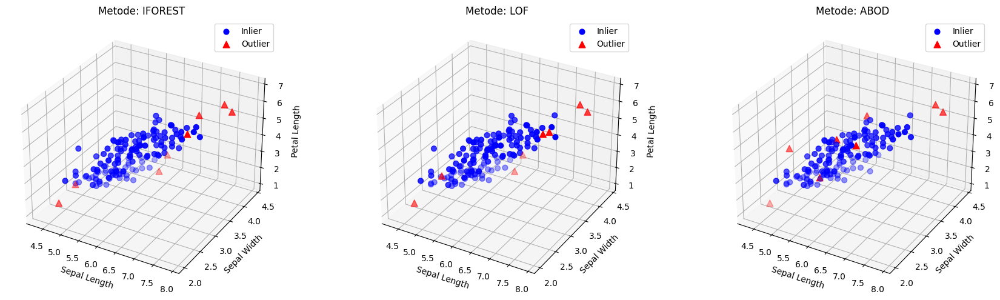

<!DOCTYPE html>


<html lang="en" data-content_root="./" >

  <head>
    <meta charset="utf-8" />
    <meta name="viewport" content="width=device-width, initial-scale=1.0" /><meta name="viewport" content="width=device-width, initial-scale=1" />

    <title>Preprocessing Penghapusan outlier &#8212; Welcome to Nuril Anjar Jupyter Book</title>
  
  
  
  <script data-cfasync="false">
    document.documentElement.dataset.mode = localStorage.getItem("mode") || "";
    document.documentElement.dataset.theme = localStorage.getItem("theme") || "";
  </script>
  
  <!-- Loaded before other Sphinx assets -->
  <link href="_static/styles/theme.css?digest=dfe6caa3a7d634c4db9b" rel="stylesheet" />
<link href="_static/styles/bootstrap.css?digest=dfe6caa3a7d634c4db9b" rel="stylesheet" />
<link href="_static/styles/pydata-sphinx-theme.css?digest=dfe6caa3a7d634c4db9b" rel="stylesheet" />

  
  <link href="_static/vendor/fontawesome/6.5.2/css/all.min.css?digest=dfe6caa3a7d634c4db9b" rel="stylesheet" />
  <link rel="preload" as="font" type="font/woff2" crossorigin href="_static/vendor/fontawesome/6.5.2/webfonts/fa-solid-900.woff2" />
<link rel="preload" as="font" type="font/woff2" crossorigin href="_static/vendor/fontawesome/6.5.2/webfonts/fa-brands-400.woff2" />
<link rel="preload" as="font" type="font/woff2" crossorigin href="_static/vendor/fontawesome/6.5.2/webfonts/fa-regular-400.woff2" />

    <link rel="stylesheet" type="text/css" href="_static/pygments.css?v=03e43079" />
    <link rel="stylesheet" type="text/css" href="_static/styles/sphinx-book-theme.css?v=eba8b062" />
    <link rel="stylesheet" type="text/css" href="_static/togglebutton.css?v=13237357" />
    <link rel="stylesheet" type="text/css" href="_static/copybutton.css?v=76b2166b" />
    <link rel="stylesheet" type="text/css" href="_static/mystnb.8ecb98da25f57f5357bf6f572d296f466b2cfe2517ffebfabe82451661e28f02.css?v=6644e6bb" />
    <link rel="stylesheet" type="text/css" href="_static/sphinx-thebe.css?v=4fa983c6" />
    <link rel="stylesheet" type="text/css" href="_static/sphinx-design.min.css?v=95c83b7e" />
  
  <!-- Pre-loaded scripts that we'll load fully later -->
  <link rel="preload" as="script" href="_static/scripts/bootstrap.js?digest=dfe6caa3a7d634c4db9b" />
<link rel="preload" as="script" href="_static/scripts/pydata-sphinx-theme.js?digest=dfe6caa3a7d634c4db9b" />
  <script src="_static/vendor/fontawesome/6.5.2/js/all.min.js?digest=dfe6caa3a7d634c4db9b"></script>

    <script src="_static/documentation_options.js?v=9eb32ce0"></script>
    <script src="_static/doctools.js?v=9a2dae69"></script>
    <script src="_static/sphinx_highlight.js?v=dc90522c"></script>
    <script src="_static/clipboard.min.js?v=a7894cd8"></script>
    <script src="_static/copybutton.js?v=f281be69"></script>
    <script src="_static/scripts/sphinx-book-theme.js?v=887ef09a"></script>
    <script>let toggleHintShow = 'Click to show';</script>
    <script>let toggleHintHide = 'Click to hide';</script>
    <script>let toggleOpenOnPrint = 'true';</script>
    <script src="_static/togglebutton.js?v=4a39c7ea"></script>
    <script>var togglebuttonSelector = '.toggle, .admonition.dropdown';</script>
    <script src="_static/design-tabs.js?v=f930bc37"></script>
    <script>const THEBE_JS_URL = "https://unpkg.com/thebe@0.8.2/lib/index.js"; const thebe_selector = ".thebe,.cell"; const thebe_selector_input = "pre"; const thebe_selector_output = ".output, .cell_output"</script>
    <script async="async" src="_static/sphinx-thebe.js?v=c100c467"></script>
    <script>var togglebuttonSelector = '.toggle, .admonition.dropdown';</script>
    <script>const THEBE_JS_URL = "https://unpkg.com/thebe@0.8.2/lib/index.js"; const thebe_selector = ".thebe,.cell"; const thebe_selector_input = "pre"; const thebe_selector_output = ".output, .cell_output"</script>
    <script>DOCUMENTATION_OPTIONS.pagename = 'Deteksi_anomali';</script>
    <link rel="index" title="Index" href="genindex.html" />
    <link rel="search" title="Search" href="search.html" />
    <link rel="prev" title="TUGAS 2 TRANSFORMASI DATA" href="Transformasi.html" />
  <meta name="viewport" content="width=device-width, initial-scale=1"/>
  <meta name="docsearch:language" content="en"/>
  </head>
  
  
  <body data-bs-spy="scroll" data-bs-target=".bd-toc-nav" data-offset="180" data-bs-root-margin="0px 0px -60%" data-default-mode="">

  
  
  <div id="pst-skip-link" class="skip-link d-print-none"><a href="#main-content">Skip to main content</a></div>
  
  <div id="pst-scroll-pixel-helper"></div>
  
  <button type="button" class="btn rounded-pill" id="pst-back-to-top">
    <i class="fa-solid fa-arrow-up"></i>Back to top</button>

  
  <input type="checkbox"
          class="sidebar-toggle"
          id="pst-primary-sidebar-checkbox"/>
  <label class="overlay overlay-primary" for="pst-primary-sidebar-checkbox"></label>
  
  <input type="checkbox"
          class="sidebar-toggle"
          id="pst-secondary-sidebar-checkbox"/>
  <label class="overlay overlay-secondary" for="pst-secondary-sidebar-checkbox"></label>
  
  <div class="search-button__wrapper">
    <div class="search-button__overlay"></div>
    <div class="search-button__search-container">
<form class="bd-search d-flex align-items-center"
      action="search.html"
      method="get">
  <i class="fa-solid fa-magnifying-glass"></i>
  <input type="search"
         class="form-control"
         name="q"
         id="search-input"
         placeholder="Search this book..."
         aria-label="Search this book..."
         autocomplete="off"
         autocorrect="off"
         autocapitalize="off"
         spellcheck="false"/>
  <span class="search-button__kbd-shortcut"><kbd class="kbd-shortcut__modifier">Ctrl</kbd>+<kbd>K</kbd></span>
</form></div>
  </div>

  <div class="pst-async-banner-revealer d-none">
  <aside id="bd-header-version-warning" class="d-none d-print-none" aria-label="Version warning"></aside>
</div>

  
    <header class="bd-header navbar navbar-expand-lg bd-navbar d-print-none">
    </header>
  

  <div class="bd-container">
    <div class="bd-container__inner bd-page-width">
      
      
      
      <div class="bd-sidebar-primary bd-sidebar">
        

  
  <div class="sidebar-header-items sidebar-primary__section">
    
    
    
    
  </div>
  
    <div class="sidebar-primary-items__start sidebar-primary__section">
        <div class="sidebar-primary-item">

  
    
  

<a class="navbar-brand logo" href="intro.html">
  
  
  
  
  
    
    
      
    
    
    
    <script>document.write(``);</script>
  
  
</a></div>
        <div class="sidebar-primary-item">

 <script>
 document.write(`
   <button class="btn search-button-field search-button__button" title="Search" aria-label="Search" data-bs-placement="bottom" data-bs-toggle="tooltip">
    <i class="fa-solid fa-magnifying-glass"></i>
    <span class="search-button__default-text">Search</span>
    <span class="search-button__kbd-shortcut"><kbd class="kbd-shortcut__modifier">Ctrl</kbd>+<kbd class="kbd-shortcut__modifier">K</kbd></span>
   </button>
 `);
 </script></div>
        <div class="sidebar-primary-item"><nav class="bd-links bd-docs-nav" aria-label="Main">
    <div class="bd-toc-item navbar-nav active">
        
        <ul class="nav bd-sidenav bd-sidenav__home-link">
            <li class="toctree-l1">
                <a class="reference internal" href="intro.html">
                    Welcome to Nuril Anjar Jupyter Book
                </a>
            </li>
        </ul>
        <ul class="current nav bd-sidenav">
<li class="toctree-l1"><a class="reference internal" href="Eksplorasi.html">Tugas 1 Eksplorasi Menggunakan Power BI</a></li>


<li class="toctree-l1"><a class="reference internal" href="Transformasi.html">TUGAS 2 TRANSFORMASI DATA</a></li>
<li class="toctree-l1 current active"><a class="current reference internal" href="#">Preprocessing Penghapusan outlier</a></li>
</ul>

    </div>
</nav></div>
    </div>
  
  
  <div class="sidebar-primary-items__end sidebar-primary__section">
  </div>
  
  <div id="rtd-footer-container"></div>


      </div>
      
      <main id="main-content" class="bd-main" role="main">
        
        

<div class="sbt-scroll-pixel-helper"></div>

          <div class="bd-content">
            <div class="bd-article-container">
              
              <div class="bd-header-article d-print-none">
<div class="header-article-items header-article__inner">
  
    <div class="header-article-items__start">
      
        <div class="header-article-item"><button class="sidebar-toggle primary-toggle btn btn-sm" title="Toggle primary sidebar" data-bs-placement="bottom" data-bs-toggle="tooltip">
  <span class="fa-solid fa-bars"></span>
</button></div>
      
    </div>
  
  
    <div class="header-article-items__end">
      
        <div class="header-article-item">

<div class="article-header-buttons">


<div class="dropdown dropdown-source-buttons">
  <button class="btn dropdown-toggle" type="button" data-bs-toggle="dropdown" aria-expanded="false" aria-label="Source repositories">
    <i class="fab fa-github"></i>
  </button>
  <ul class="dropdown-menu">
      
      
      
      <li><a href="https://github.com/executablebooks/jupyter-book" target="_blank"
   class="btn btn-sm btn-source-repository-button dropdown-item"
   title="Source repository"
   data-bs-placement="left" data-bs-toggle="tooltip"
>
  

<span class="btn__icon-container">
  <i class="fab fa-github"></i>
  </span>
<span class="btn__text-container">Repository</span>
</a>
</li>
      
      
      
      
      <li><a href="https://github.com/executablebooks/jupyter-book/issues/new?title=Issue%20on%20page%20%2FDeteksi_anomali.html&body=Your%20issue%20content%20here." target="_blank"
   class="btn btn-sm btn-source-issues-button dropdown-item"
   title="Open an issue"
   data-bs-placement="left" data-bs-toggle="tooltip"
>
  

<span class="btn__icon-container">
  <i class="fas fa-lightbulb"></i>
  </span>
<span class="btn__text-container">Open issue</span>
</a>
</li>
      
  </ul>
</div>


<div class="dropdown dropdown-download-buttons">
  <button class="btn dropdown-toggle" type="button" data-bs-toggle="dropdown" aria-expanded="false" aria-label="Download this page">
    <i class="fas fa-download"></i>
  </button>
  <ul class="dropdown-menu">
      
      
      
      <li><a href="_sources/Deteksi_anomali.ipynb" target="_blank"
   class="btn btn-sm btn-download-source-button dropdown-item"
   title="Download source file"
   data-bs-placement="left" data-bs-toggle="tooltip"
>
  

<span class="btn__icon-container">
  <i class="fas fa-file"></i>
  </span>
<span class="btn__text-container">.ipynb</span>
</a>
</li>
      
      
      
      
      <li>
<button onclick="window.print()"
  class="btn btn-sm btn-download-pdf-button dropdown-item"
  title="Print to PDF"
  data-bs-placement="left" data-bs-toggle="tooltip"
>
  

<span class="btn__icon-container">
  <i class="fas fa-file-pdf"></i>
  </span>
<span class="btn__text-container">.pdf</span>
</button>
</li>
      
  </ul>
</div>


<button onclick="toggleFullScreen()"
  class="btn btn-sm btn-fullscreen-button"
  title="Fullscreen mode"
  data-bs-placement="bottom" data-bs-toggle="tooltip"
>
  

<span class="btn__icon-container">
  <i class="fas fa-expand"></i>
  </span>

</button>


<script>
document.write(`
  <button class="btn btn-sm nav-link pst-navbar-icon theme-switch-button" title="light/dark" aria-label="light/dark" data-bs-placement="bottom" data-bs-toggle="tooltip">
    <i class="theme-switch fa-solid fa-sun fa-lg" data-mode="light"></i>
    <i class="theme-switch fa-solid fa-moon fa-lg" data-mode="dark"></i>
    <i class="theme-switch fa-solid fa-circle-half-stroke fa-lg" data-mode="auto"></i>
  </button>
`);
</script>


<script>
document.write(`
  <button class="btn btn-sm pst-navbar-icon search-button search-button__button" title="Search" aria-label="Search" data-bs-placement="bottom" data-bs-toggle="tooltip">
    <i class="fa-solid fa-magnifying-glass fa-lg"></i>
  </button>
`);
</script>
<button class="sidebar-toggle secondary-toggle btn btn-sm" title="Toggle secondary sidebar" data-bs-placement="bottom" data-bs-toggle="tooltip">
    <span class="fa-solid fa-list"></span>
</button>
</div></div>
      
    </div>
  
</div>
</div>
              
              

<div id="jb-print-docs-body" class="onlyprint">
    <h1>Preprocessing Penghapusan outlier</h1>
    <!-- Table of contents -->
    <div id="print-main-content">
        <div id="jb-print-toc">
            
            <div>
                <h2> Contents </h2>
            </div>
            <nav aria-label="Page">
                <ul class="visible nav section-nav flex-column">
<li class="toc-h2 nav-item toc-entry"><a class="reference internal nav-link" href="#install-pip">Install pip</a></li>
<li class="toc-h2 nav-item toc-entry"><a class="reference internal nav-link" href="#preprocessing-outlier-menggunakan-3-metode">Preprocessing outlier menggunakan 3 metode</a></li>
<li class="toc-h2 nav-item toc-entry"><a class="reference internal nav-link" href="#visualisasi-hasil-data">Visualisasi hasil data</a></li>
</ul>
            </nav>
        </div>
    </div>
</div>

              
                
<div id="searchbox"></div>
                <article class="bd-article">
                  
  <section class="tex2jax_ignore mathjax_ignore" id="preprocessing-penghapusan-outlier">
<h1>Preprocessing Penghapusan outlier<a class="headerlink" href="#preprocessing-penghapusan-outlier" title="Link to this heading">#</a></h1>
<section id="install-pip">
<h2>Install pip<a class="headerlink" href="#install-pip" title="Link to this heading">#</a></h2>
<p>Perintah !pip install pyod digunakan untuk menginstal PyOD (Python Outlier Detection), yaitu library Python yang dikhususkan untuk mendeteksi anomali atau data pencilan. Library ini menyediakan lebih dari 30 algoritma populer, di antaranya Isolation Forest, Local Outlier Factor (LOF), Angle-based Outlier Detection (ABOD), k-NN, PCA, serta One-Class SVM. Dengan adanya PyOD, peneliti maupun praktisi dapat lebih mudah mengidentifikasi data yang menyimpang dari pola umum. Setelah terpasang, PyOD bisa langsung dipakai di Jupyter Notebook maupun Google Colab untuk keperluan preprocessing dan analisis data berbasis anomaly detection.</p>
<div class="cell docutils container">
<div class="cell_input docutils container">
<div class="highlight-ipython3 notranslate"><div class="highlight"><pre><span></span><span class="o">!</span>pip<span class="w"> </span>install<span class="w"> </span>pyod
</pre></div>
</div>
</div>
<div class="cell_output docutils container">
<div class="output stream highlight-myst-ansi notranslate"><div class="highlight"><pre><span></span>Requirement already satisfied: pyod in /usr/local/python/3.12.1/lib/python3.12/site-packages (2.0.5)
</pre></div>
</div>
<div class="output stream highlight-myst-ansi notranslate"><div class="highlight"><pre><span></span>Requirement already satisfied: joblib in /home/codespace/.local/lib/python3.12/site-packages (from pyod) (1.5.1)
Requirement already satisfied: matplotlib in /home/codespace/.local/lib/python3.12/site-packages (from pyod) (3.10.3)
Requirement already satisfied: numpy&gt;=1.19 in /usr/local/python/3.12.1/lib/python3.12/site-packages (from pyod) (2.2.6)
Requirement already satisfied: numba&gt;=0.51 in /usr/local/python/3.12.1/lib/python3.12/site-packages (from pyod) (0.61.2)
Requirement already satisfied: scipy&gt;=1.5.1 in /home/codespace/.local/lib/python3.12/site-packages (from pyod) (1.16.0)
Requirement already satisfied: scikit-learn&gt;=0.22.0 in /home/codespace/.local/lib/python3.12/site-packages (from pyod) (1.7.0)
Requirement already satisfied: llvmlite&lt;0.45,&gt;=0.44.0dev0 in /usr/local/python/3.12.1/lib/python3.12/site-packages (from numba&gt;=0.51-&gt;pyod) (0.44.0)
</pre></div>
</div>
<div class="output stream highlight-myst-ansi notranslate"><div class="highlight"><pre><span></span>Requirement already satisfied: threadpoolctl&gt;=3.1.0 in /home/codespace/.local/lib/python3.12/site-packages (from scikit-learn&gt;=0.22.0-&gt;pyod) (3.6.0)
Requirement already satisfied: contourpy&gt;=1.0.1 in /home/codespace/.local/lib/python3.12/site-packages (from matplotlib-&gt;pyod) (1.3.2)
Requirement already satisfied: cycler&gt;=0.10 in /home/codespace/.local/lib/python3.12/site-packages (from matplotlib-&gt;pyod) (0.12.1)
Requirement already satisfied: fonttools&gt;=4.22.0 in /home/codespace/.local/lib/python3.12/site-packages (from matplotlib-&gt;pyod) (4.58.5)
Requirement already satisfied: kiwisolver&gt;=1.3.1 in /home/codespace/.local/lib/python3.12/site-packages (from matplotlib-&gt;pyod) (1.4.8)
Requirement already satisfied: packaging&gt;=20.0 in /home/codespace/.local/lib/python3.12/site-packages (from matplotlib-&gt;pyod) (25.0)
Requirement already satisfied: pillow&gt;=8 in /home/codespace/.local/lib/python3.12/site-packages (from matplotlib-&gt;pyod) (11.3.0)
Requirement already satisfied: pyparsing&gt;=2.3.1 in /home/codespace/.local/lib/python3.12/site-packages (from matplotlib-&gt;pyod) (3.2.3)
Requirement already satisfied: python-dateutil&gt;=2.7 in /home/codespace/.local/lib/python3.12/site-packages (from matplotlib-&gt;pyod) (2.9.0.post0)
</pre></div>
</div>
<div class="output stream highlight-myst-ansi notranslate"><div class="highlight"><pre><span></span>Requirement already satisfied: six&gt;=1.5 in /home/codespace/.local/lib/python3.12/site-packages (from python-dateutil&gt;=2.7-&gt;matplotlib-&gt;pyod) (1.17.0)
</pre></div>
</div>
<div class="output stream highlight-myst-ansi notranslate"><div class="highlight"><pre><span></span><span class=" -Color -Color-Bold">[</span><span class=" -Color -Color-Blue">notice</span><span class=" -Color -Color-Bold">]</span> A new release of pip is available: <span class=" -Color -Color-Red">25.1.1</span> -&gt; <span class=" -Color -Color-Green">25.2</span>
<span class=" -Color -Color-Bold">[</span><span class=" -Color -Color-Blue">notice</span><span class=" -Color -Color-Bold">]</span> To update, run: <span class=" -Color -Color-Green">python3 -m pip install --upgrade pip</span>
</pre></div>
</div>
</div>
</div>
<div class="cell docutils container">
<div class="cell_input docutils container">
<div class="highlight-ipython3 notranslate"><div class="highlight"><pre><span></span><span class="o">!</span>pip<span class="w"> </span>install<span class="w"> </span>pycaret<span class="o">[</span>full<span class="o">]</span>
</pre></div>
</div>
</div>
<div class="cell_output docutils container">
<div class="output stream highlight-myst-ansi notranslate"><div class="highlight"><pre><span></span>Collecting pycaret[full]
</pre></div>
</div>
<div class="output stream highlight-myst-ansi notranslate"><div class="highlight"><pre><span></span>  Using cached pycaret-3.3.2-py3-none-any.whl.metadata (17 kB)
Requirement already satisfied: ipython&gt;=5.5.0 in /home/codespace/.local/lib/python3.12/site-packages (from pycaret[full]) (9.4.0)
</pre></div>
</div>
<div class="output stream highlight-myst-ansi notranslate"><div class="highlight"><pre><span></span>Collecting ipywidgets&gt;=7.6.5 (from pycaret[full])
  Using cached ipywidgets-8.1.7-py3-none-any.whl.metadata (2.4 kB)
</pre></div>
</div>
<div class="output stream highlight-myst-ansi notranslate"><div class="highlight"><pre><span></span>Collecting tqdm&gt;=4.62.0 (from pycaret[full])
  Using cached tqdm-4.67.1-py3-none-any.whl.metadata (57 kB)
</pre></div>
</div>
<div class="output stream highlight-myst-ansi notranslate"><div class="highlight"><pre><span></span>Collecting numpy&lt;1.27,&gt;=1.21 (from pycaret[full])
  Using cached numpy-1.26.4-cp312-cp312-manylinux_2_17_x86_64.manylinux2014_x86_64.whl.metadata (61 kB)
</pre></div>
</div>
<div class="output stream highlight-myst-ansi notranslate"><div class="highlight"><pre><span></span>Collecting pandas&lt;2.2.0 (from pycaret[full])
  Using cached pandas-2.1.4-cp312-cp312-manylinux_2_17_x86_64.manylinux2014_x86_64.whl.metadata (18 kB)
</pre></div>
</div>
<div class="output stream highlight-myst-ansi notranslate"><div class="highlight"><pre><span></span>Requirement already satisfied: jinja2&gt;=3 in /home/codespace/.local/lib/python3.12/site-packages (from pycaret[full]) (3.1.6)
</pre></div>
</div>
<div class="output stream highlight-myst-ansi notranslate"><div class="highlight"><pre><span></span>Collecting scipy&lt;=1.11.4,&gt;=1.6.1 (from pycaret[full])
  Using cached scipy-1.11.4-cp312-cp312-manylinux_2_17_x86_64.manylinux2014_x86_64.whl.metadata (60 kB)
</pre></div>
</div>
<div class="output stream highlight-myst-ansi notranslate"><div class="highlight"><pre><span></span>Collecting joblib&lt;1.4,&gt;=1.2.0 (from pycaret[full])
  Using cached joblib-1.3.2-py3-none-any.whl.metadata (5.4 kB)
Requirement already satisfied: scikit-learn&gt;1.4.0 in /home/codespace/.local/lib/python3.12/site-packages (from pycaret[full]) (1.7.0)
Requirement already satisfied: pyod&gt;=1.1.3 in /usr/local/python/3.12.1/lib/python3.12/site-packages (from pycaret[full]) (2.0.5)
Collecting imbalanced-learn&gt;=0.12.0 (from pycaret[full])
  Using cached imbalanced_learn-0.14.0-py3-none-any.whl.metadata (8.8 kB)
</pre></div>
</div>
<div class="output stream highlight-myst-ansi notranslate"><div class="highlight"><pre><span></span>Collecting category-encoders&gt;=2.4.0 (from pycaret[full])
  Using cached category_encoders-2.8.1-py3-none-any.whl.metadata (7.9 kB)
Collecting lightgbm&gt;=3.0.0 (from pycaret[full])
</pre></div>
</div>
<div class="output stream highlight-myst-ansi notranslate"><div class="highlight"><pre><span></span>  Using cached lightgbm-4.6.0-py3-none-manylinux_2_28_x86_64.whl.metadata (17 kB)
Requirement already satisfied: numba&gt;=0.55.0 in /usr/local/python/3.12.1/lib/python3.12/site-packages (from pycaret[full]) (0.61.2)
Requirement already satisfied: requests&gt;=2.27.1 in /home/codespace/.local/lib/python3.12/site-packages (from pycaret[full]) (2.32.4)
Requirement already satisfied: psutil&gt;=5.9.0 in /home/codespace/.local/lib/python3.12/site-packages (from pycaret[full]) (7.0.0)
Requirement already satisfied: markupsafe&gt;=2.0.1 in /home/codespace/.local/lib/python3.12/site-packages (from pycaret[full]) (3.0.2)
Requirement already satisfied: importlib-metadata&gt;=4.12.0 in /usr/local/python/3.12.1/lib/python3.12/site-packages (from pycaret[full]) (8.7.0)
Requirement already satisfied: nbformat&gt;=4.2.0 in /home/codespace/.local/lib/python3.12/site-packages (from pycaret[full]) (5.10.4)
</pre></div>
</div>
<div class="output stream highlight-myst-ansi notranslate"><div class="highlight"><pre><span></span>Collecting cloudpickle (from pycaret[full])
  Using cached cloudpickle-3.1.1-py3-none-any.whl.metadata (7.1 kB)
Collecting deprecation&gt;=2.1.0 (from pycaret[full])
  Using cached deprecation-2.1.0-py2.py3-none-any.whl.metadata (4.6 kB)
</pre></div>
</div>
<div class="output stream highlight-myst-ansi notranslate"><div class="highlight"><pre><span></span>Collecting xxhash (from pycaret[full])
  Using cached xxhash-3.5.0-cp312-cp312-manylinux_2_17_x86_64.manylinux2014_x86_64.whl.metadata (12 kB)
</pre></div>
</div>
<div class="output stream highlight-myst-ansi notranslate"><div class="highlight"><pre><span></span>Collecting matplotlib&lt;3.8.0 (from pycaret[full])
  Using cached matplotlib-3.7.5-cp312-cp312-manylinux_2_17_x86_64.manylinux2014_x86_64.whl.metadata (5.7 kB)
Collecting scikit-plot&gt;=0.3.7 (from pycaret[full])
  Using cached scikit_plot-0.3.7-py3-none-any.whl.metadata (7.1 kB)
</pre></div>
</div>
<div class="output stream highlight-myst-ansi notranslate"><div class="highlight"><pre><span></span>Collecting yellowbrick&gt;=1.4 (from pycaret[full])
  Using cached yellowbrick-1.5-py3-none-any.whl.metadata (7.7 kB)
Requirement already satisfied: plotly&gt;=5.14.0 in /home/codespace/.local/lib/python3.12/site-packages (from pycaret[full]) (6.2.0)
Collecting kaleido&gt;=0.2.1 (from pycaret[full])
  Using cached kaleido-1.1.0-py3-none-any.whl.metadata (5.6 kB)
</pre></div>
</div>
<div class="output stream highlight-myst-ansi notranslate"><div class="highlight"><pre><span></span>Collecting schemdraw==0.15 (from pycaret[full])
  Using cached schemdraw-0.15-py3-none-any.whl.metadata (2.2 kB)
Collecting plotly-resampler&gt;=0.8.3.1 (from pycaret[full])
  Using cached plotly_resampler-0.11.0-py3-none-any.whl.metadata (13 kB)
</pre></div>
</div>
<div class="output stream highlight-myst-ansi notranslate"><div class="highlight"><pre><span></span>Collecting statsmodels&gt;=0.12.1 (from pycaret[full])
  Using cached statsmodels-0.14.5-cp312-cp312-manylinux2014_x86_64.manylinux_2_17_x86_64.manylinux_2_28_x86_64.whl.metadata (9.5 kB)
</pre></div>
</div>
<div class="output stream highlight-myst-ansi notranslate"><div class="highlight"><pre><span></span>Collecting sktime==0.26.0 (from pycaret[full])
  Using cached sktime-0.26.0-py3-none-any.whl.metadata (29 kB)
</pre></div>
</div>
<div class="output stream highlight-myst-ansi notranslate"><div class="highlight"><pre><span></span>Collecting tbats&gt;=1.1.3 (from pycaret[full])
  Using cached tbats-1.1.3-py3-none-any.whl.metadata (3.8 kB)
</pre></div>
</div>
<div class="output stream highlight-myst-ansi notranslate"><div class="highlight"><pre><span></span>Collecting pmdarima&gt;=2.0.4 (from pycaret[full])
  Using cached pmdarima-2.0.4-cp312-cp312-manylinux_2_17_x86_64.manylinux2014_x86_64.manylinux_2_28_x86_64.whl.metadata (7.8 kB)
Collecting wurlitzer (from pycaret[full])
  Using cached wurlitzer-3.1.1-py3-none-any.whl.metadata (2.5 kB)
</pre></div>
</div>
<div class="output stream highlight-myst-ansi notranslate"><div class="highlight"><pre><span></span>Collecting shap~=0.44.0 (from pycaret[full])
  Using cached shap-0.44.1.tar.gz (1.1 MB)
</pre></div>
</div>
<div class="output stream highlight-myst-ansi notranslate"><div class="highlight"><pre><span></span>  Installing build dependencies ... ?25l-
</pre></div>
</div>
<div class="output stream highlight-myst-ansi notranslate"><div class="highlight"><pre><span></span> \
</pre></div>
</div>
<div class="output stream highlight-myst-ansi notranslate"><div class="highlight"><pre><span></span> |
</pre></div>
</div>
<div class="output stream highlight-myst-ansi notranslate"><div class="highlight"><pre><span></span> /
</pre></div>
</div>
<div class="output stream highlight-myst-ansi notranslate"><div class="highlight"><pre><span></span> -
</pre></div>
</div>
<div class="output stream highlight-myst-ansi notranslate"><div class="highlight"><pre><span></span> \
</pre></div>
</div>
<div class="output stream highlight-myst-ansi notranslate"><div class="highlight"><pre><span></span> |
</pre></div>
</div>
<div class="output stream highlight-myst-ansi notranslate"><div class="highlight"><pre><span></span> done
</pre></div>
</div>
<div class="output stream highlight-myst-ansi notranslate"><div class="highlight"><pre><span></span>?25h  Getting requirements to build wheel ... ?25l-
</pre></div>
</div>
<div class="output stream highlight-myst-ansi notranslate"><div class="highlight"><pre><span></span> \
</pre></div>
</div>
<div class="output stream highlight-myst-ansi notranslate"><div class="highlight"><pre><span></span> done
</pre></div>
</div>
<div class="output stream highlight-myst-ansi notranslate"><div class="highlight"><pre><span></span>?25h  Preparing metadata (pyproject.toml) ... ?25l-
</pre></div>
</div>
<div class="output stream highlight-myst-ansi notranslate"><div class="highlight"><pre><span></span> done
</pre></div>
</div>
<div class="output stream highlight-myst-ansi notranslate"><div class="highlight"><pre><span></span>?25hCollecting interpret&gt;=0.2.7 (from pycaret[full])
  Using cached interpret-0.7.2-py3-none-any.whl.metadata (1.2 kB)
Collecting umap-learn&gt;=0.5.2 (from pycaret[full])
  Using cached umap_learn-0.5.9.post2-py3-none-any.whl.metadata (25 kB)
</pre></div>
</div>
<div class="output stream highlight-myst-ansi notranslate"><div class="highlight"><pre><span></span>Requirement already satisfied: pyyaml in /home/codespace/.local/lib/python3.12/site-packages (from pycaret[full]) (6.0.2)
Collecting ydata-profiling&gt;=4.3.1 (from pycaret[full])
  Using cached ydata_profiling-4.16.1-py2.py3-none-any.whl.metadata (22 kB)
</pre></div>
</div>
<div class="output stream highlight-myst-ansi notranslate"><div class="highlight"><pre><span></span>Collecting explainerdashboard&gt;=0.3.8 (from pycaret[full])
  Using cached explainerdashboard-0.5.1-py3-none-any.whl.metadata (32 kB)
</pre></div>
</div>
<div class="output stream highlight-myst-ansi notranslate"><div class="highlight"><pre><span></span>Collecting fairlearn==0.7.0 (from pycaret[full])
  Using cached fairlearn-0.7.0-py3-none-any.whl.metadata (7.3 kB)
</pre></div>
</div>
<div class="output stream highlight-myst-ansi notranslate"><div class="highlight"><pre><span></span>Collecting kmodes&gt;=0.11.1 (from pycaret[full])
  Using cached kmodes-0.12.2-py2.py3-none-any.whl.metadata (8.1 kB)
Collecting mlxtend&gt;=0.19.0 (from pycaret[full])
  Using cached mlxtend-0.23.4-py3-none-any.whl.metadata (7.3 kB)
</pre></div>
</div>
<div class="output stream highlight-myst-ansi notranslate"><div class="highlight"><pre><span></span>Collecting statsforecast&lt;1.6.0,&gt;=0.5.5 (from pycaret[full])
  Using cached statsforecast-1.5.0-py3-none-any.whl.metadata (23 kB)
Collecting hyperopt&gt;=0.2.7 (from pycaret[full])
  Using cached hyperopt-0.2.7-py2.py3-none-any.whl.metadata (1.7 kB)
Collecting optuna&gt;=3.0.0 (from pycaret[full])
  Using cached optuna-4.5.0-py3-none-any.whl.metadata (17 kB)
</pre></div>
</div>
<div class="output stream highlight-myst-ansi notranslate"><div class="highlight"><pre><span></span>Collecting optuna-integration (from pycaret[full])
  Using cached optuna_integration-4.5.0-py3-none-any.whl.metadata (12 kB)
Collecting scikit-optimize&gt;=0.9.0 (from pycaret[full])
</pre></div>
</div>
<div class="output stream highlight-myst-ansi notranslate"><div class="highlight"><pre><span></span>  Using cached scikit_optimize-0.10.2-py2.py3-none-any.whl.metadata (9.7 kB)
</pre></div>
</div>
<div class="output stream highlight-myst-ansi notranslate"><div class="highlight"><pre><span></span>Collecting mlflow&gt;=2.0.0 (from pycaret[full])
  Using cached mlflow-3.3.2-py3-none-any.whl.metadata (30 kB)
</pre></div>
</div>
<div class="output stream highlight-myst-ansi notranslate"><div class="highlight"><pre><span></span>Collecting gradio&gt;=3.50.2 (from pycaret[full])
  Using cached gradio-5.45.0-py3-none-any.whl.metadata (16 kB)
</pre></div>
</div>
<div class="output stream highlight-myst-ansi notranslate"><div class="highlight"><pre><span></span>Collecting boto3&gt;=1.24.56 (from pycaret[full])
  Using cached boto3-1.40.31-py3-none-any.whl.metadata (6.7 kB)
</pre></div>
</div>
<div class="output stream highlight-myst-ansi notranslate"><div class="highlight"><pre><span></span>Collecting fastapi (from pycaret[full])
</pre></div>
</div>
<div class="output stream highlight-myst-ansi notranslate"><div class="highlight"><pre><span></span>  Using cached fastapi-0.116.1-py3-none-any.whl.metadata (28 kB)
Collecting uvicorn&gt;=0.17.6 (from pycaret[full])
  Using cached uvicorn-0.35.0-py3-none-any.whl.metadata (6.5 kB)
</pre></div>
</div>
<div class="output stream highlight-myst-ansi notranslate"><div class="highlight"><pre><span></span>Collecting m2cgen&gt;=0.9.0 (from pycaret[full])
  Using cached m2cgen-0.10.0-py3-none-any.whl.metadata (9.9 kB)
Collecting evidently~=0.4.16 (from pycaret[full])
  Using cached evidently-0.4.40-py3-none-any.whl.metadata (11 kB)
</pre></div>
</div>
<div class="output stream highlight-myst-ansi notranslate"><div class="highlight"><pre><span></span>Collecting dask&gt;=2024.4.1 (from pycaret[full])
  Using cached dask-2025.9.0-py3-none-any.whl.metadata (3.8 kB)
</pre></div>
</div>
<div class="output stream highlight-myst-ansi notranslate"><div class="highlight"><pre><span></span>Collecting distributed&gt;=2024.4.1 (from pycaret[full])
</pre></div>
</div>
<div class="output stream highlight-myst-ansi notranslate"><div class="highlight"><pre><span></span>  Using cached distributed-2025.9.0-py3-none-any.whl.metadata (3.4 kB)
Collecting fugue~=0.8.0 (from pycaret[full])
  Using cached fugue-0.8.7-py3-none-any.whl.metadata (17 kB)
</pre></div>
</div>
<div class="output stream highlight-myst-ansi notranslate"><div class="highlight"><pre><span></span>Collecting flask (from pycaret[full])
  Using cached flask-3.1.2-py3-none-any.whl.metadata (3.2 kB)
</pre></div>
</div>
<div class="output stream highlight-myst-ansi notranslate"><div class="highlight"><pre><span></span>Collecting Werkzeug&lt;3.0,&gt;=2.2 (from pycaret[full])
  Using cached werkzeug-2.3.8-py3-none-any.whl.metadata (4.1 kB)
Collecting pytest&lt;8.0.0 (from pycaret[full])
  Using cached pytest-7.4.4-py3-none-any.whl.metadata (7.9 kB)
</pre></div>
</div>
<div class="output stream highlight-myst-ansi notranslate"><div class="highlight"><pre><span></span>Collecting moto&lt;5.0.0 (from pycaret[full])
  Using cached moto-4.2.14-py2.py3-none-any.whl.metadata (12 kB)
</pre></div>
</div>
<div class="output stream highlight-myst-ansi notranslate"><div class="highlight"><pre><span></span>Collecting dash[testing] (from pycaret[full])
  Using cached dash-3.2.0-py3-none-any.whl.metadata (10 kB)
</pre></div>
</div>
<div class="output stream highlight-myst-ansi notranslate"><div class="highlight"><pre><span></span>Collecting scikit-learn-intelex&gt;=2023.0.1 (from pycaret[full])
  Using cached scikit_learn_intelex-2025.8.0-py312-none-manylinux_2_28_x86_64.whl.metadata (11 kB)
</pre></div>
</div>
<div class="output stream highlight-myst-ansi notranslate"><div class="highlight"><pre><span></span>Collecting catboost&gt;=0.23.2 (from pycaret[full])
  Using cached catboost-1.2.8-cp312-cp312-manylinux2014_x86_64.whl.metadata (1.2 kB)
</pre></div>
</div>
<div class="output stream highlight-myst-ansi notranslate"><div class="highlight"><pre><span></span>Collecting tune-sklearn&gt;=0.2.1 (from pycaret[full])
  Using cached tune_sklearn-0.5.0-py3-none-any.whl.metadata (12 kB)
</pre></div>
</div>
<div class="output stream highlight-myst-ansi notranslate"><div class="highlight"><pre><span></span>Collecting ray&gt;=1.0.0 (from ray[tune]&gt;=1.0.0; (python_version != &quot;3.11&quot; and platform_system != &quot;Windows&quot;) and extra == &quot;full&quot;-&gt;pycaret[full])
</pre></div>
</div>
<div class="output stream highlight-myst-ansi notranslate"><div class="highlight"><pre><span></span>  Using cached ray-2.49.1-cp312-cp312-manylinux2014_x86_64.whl.metadata (21 kB)
</pre></div>
</div>
<div class="output stream highlight-myst-ansi notranslate"><div class="highlight"><pre><span></span>Collecting xgboost&gt;=1.1.0 (from pycaret[full])
  Using cached xgboost-3.0.5-py3-none-manylinux_2_28_x86_64.whl.metadata (2.1 kB)
</pre></div>
</div>
<div class="output stream highlight-myst-ansi notranslate"><div class="highlight"><pre><span></span>Requirement already satisfied: packaging in /home/codespace/.local/lib/python3.12/site-packages (from sktime==0.26.0-&gt;pycaret[full]) (25.0)
Collecting scikit-base&lt;0.8.0 (from sktime==0.26.0-&gt;pycaret[full])
  Using cached scikit_base-0.7.8-py3-none-any.whl.metadata (8.8 kB)
</pre></div>
</div>
<div class="output stream highlight-myst-ansi notranslate"><div class="highlight"><pre><span></span>Collecting scikit-learn&gt;1.4.0 (from pycaret[full])
  Using cached scikit_learn-1.4.2-cp312-cp312-manylinux_2_17_x86_64.manylinux2014_x86_64.whl.metadata (11 kB)
</pre></div>
</div>
<div class="output stream highlight-myst-ansi notranslate"><div class="highlight"><pre><span></span>Collecting nltk&gt;=3.6.7 (from evidently~=0.4.16-&gt;pycaret[full])
  Using cached nltk-3.9.1-py3-none-any.whl.metadata (2.9 kB)
</pre></div>
</div>
<div class="output stream highlight-myst-ansi notranslate"><div class="highlight"><pre><span></span>Collecting pydantic&gt;=1.10.13 (from evidently~=0.4.16-&gt;pycaret[full])
  Using cached pydantic-2.11.9-py3-none-any.whl.metadata (68 kB)
Collecting litestar&gt;=2.8.3 (from evidently~=0.4.16-&gt;pycaret[full])
  Using cached litestar-2.17.0-py3-none-any.whl.metadata (26 kB)
</pre></div>
</div>
<div class="output stream highlight-myst-ansi notranslate"><div class="highlight"><pre><span></span>Collecting typing-inspect&gt;=0.9.0 (from evidently~=0.4.16-&gt;pycaret[full])
  Using cached typing_inspect-0.9.0-py3-none-any.whl.metadata (1.5 kB)
</pre></div>
</div>
<div class="output stream highlight-myst-ansi notranslate"><div class="highlight"><pre><span></span>Collecting watchdog&gt;=3.0.0 (from evidently~=0.4.16-&gt;pycaret[full])
  Using cached watchdog-6.0.0-py3-none-manylinux2014_x86_64.whl.metadata (44 kB)
</pre></div>
</div>
<div class="output stream highlight-myst-ansi notranslate"><div class="highlight"><pre><span></span>Collecting typer&gt;=0.3 (from evidently~=0.4.16-&gt;pycaret[full])
  Using cached typer-0.17.4-py3-none-any.whl.metadata (15 kB)
</pre></div>
</div>
<div class="output stream highlight-myst-ansi notranslate"><div class="highlight"><pre><span></span>Collecting rich&gt;=13 (from evidently~=0.4.16-&gt;pycaret[full])
  Using cached rich-14.1.0-py3-none-any.whl.metadata (18 kB)
Collecting iterative-telemetry&gt;=0.0.5 (from evidently~=0.4.16-&gt;pycaret[full])
  Using cached iterative_telemetry-0.0.10-py3-none-any.whl.metadata (4.1 kB)
Collecting dynaconf&gt;=3.2.4 (from evidently~=0.4.16-&gt;pycaret[full])
  Using cached dynaconf-3.2.11-py2.py3-none-any.whl.metadata (9.2 kB)
</pre></div>
</div>
<div class="output stream highlight-myst-ansi notranslate"><div class="highlight"><pre><span></span>Requirement already satisfied: certifi&gt;=2024.7.4 in /home/codespace/.local/lib/python3.12/site-packages (from evidently~=0.4.16-&gt;pycaret[full]) (2025.7.9)
Requirement already satisfied: urllib3&gt;=1.26.19 in /home/codespace/.local/lib/python3.12/site-packages (from evidently~=0.4.16-&gt;pycaret[full]) (2.5.0)
Requirement already satisfied: fsspec&gt;=2024.6.1 in /home/codespace/.local/lib/python3.12/site-packages (from evidently~=0.4.16-&gt;pycaret[full]) (2024.6.1)
</pre></div>
</div>
<div class="output stream highlight-myst-ansi notranslate"><div class="highlight"><pre><span></span>Collecting ujson&gt;=5.4.0 (from evidently~=0.4.16-&gt;pycaret[full])
  Using cached ujson-5.11.0-cp312-cp312-manylinux_2_24_x86_64.manylinux_2_28_x86_64.whl.metadata (9.4 kB)
Collecting uuid6&gt;=2024.7.10 (from evidently~=0.4.16-&gt;pycaret[full])
  Using cached uuid6-2025.0.1-py3-none-any.whl.metadata (10 kB)
</pre></div>
</div>
<div class="output stream highlight-myst-ansi notranslate"><div class="highlight"><pre><span></span>Collecting cryptography&gt;=43.0.1 (from evidently~=0.4.16-&gt;pycaret[full])
  Using cached cryptography-45.0.7-cp311-abi3-manylinux_2_34_x86_64.whl.metadata (5.7 kB)
</pre></div>
</div>
<div class="output stream highlight-myst-ansi notranslate"><div class="highlight"><pre><span></span>Collecting triad&gt;=0.9.3 (from fugue~=0.8.0-&gt;pycaret[full])
  Using cached triad-0.9.8-py3-none-any.whl.metadata (6.3 kB)
Collecting adagio&gt;=0.2.4 (from fugue~=0.8.0-&gt;pycaret[full])
  Using cached adagio-0.2.6-py3-none-any.whl.metadata (1.8 kB)
Collecting qpd&gt;=0.4.4 (from fugue~=0.8.0-&gt;pycaret[full])
  Using cached qpd-0.4.4-py3-none-any.whl.metadata (6.4 kB)
Collecting fugue-sql-antlr&gt;=0.1.6 (from fugue~=0.8.0-&gt;pycaret[full])
  Using cached fugue-sql-antlr-0.2.2.tar.gz (154 kB)
</pre></div>
</div>
<div class="output stream highlight-myst-ansi notranslate"><div class="highlight"><pre><span></span>  Preparing metadata (setup.py) ... ?25l-
</pre></div>
</div>
<div class="output stream highlight-myst-ansi notranslate"><div class="highlight"><pre><span></span> \ done
</pre></div>
</div>
<div class="output stream highlight-myst-ansi notranslate"><div class="highlight"><pre><span></span>?25hCollecting sqlglot (from fugue~=0.8.0-&gt;pycaret[full])
  Using cached sqlglot-27.14.0-py3-none-any.whl.metadata (20 kB)
Requirement already satisfied: contourpy&gt;=1.0.1 in /home/codespace/.local/lib/python3.12/site-packages (from matplotlib&lt;3.8.0-&gt;pycaret[full]) (1.3.2)
Requirement already satisfied: cycler&gt;=0.10 in /home/codespace/.local/lib/python3.12/site-packages (from matplotlib&lt;3.8.0-&gt;pycaret[full]) (0.12.1)
Requirement already satisfied: fonttools&gt;=4.22.0 in /home/codespace/.local/lib/python3.12/site-packages (from matplotlib&lt;3.8.0-&gt;pycaret[full]) (4.58.5)
Requirement already satisfied: kiwisolver&gt;=1.0.1 in /home/codespace/.local/lib/python3.12/site-packages (from matplotlib&lt;3.8.0-&gt;pycaret[full]) (1.4.8)
Requirement already satisfied: pillow&gt;=6.2.0 in /home/codespace/.local/lib/python3.12/site-packages (from matplotlib&lt;3.8.0-&gt;pycaret[full]) (11.3.0)
Requirement already satisfied: pyparsing&gt;=2.3.1 in /home/codespace/.local/lib/python3.12/site-packages (from matplotlib&lt;3.8.0-&gt;pycaret[full]) (3.2.3)
Requirement already satisfied: python-dateutil&gt;=2.7 in /home/codespace/.local/lib/python3.12/site-packages (from matplotlib&lt;3.8.0-&gt;pycaret[full]) (2.9.0.post0)
</pre></div>
</div>
<div class="output stream highlight-myst-ansi notranslate"><div class="highlight"><pre><span></span>Collecting botocore&gt;=1.12.201 (from moto&lt;5.0.0-&gt;pycaret[full])
  Using cached botocore-1.40.31-py3-none-any.whl.metadata (5.7 kB)
</pre></div>
</div>
<div class="output stream highlight-myst-ansi notranslate"><div class="highlight"><pre><span></span>Collecting xmltodict (from moto&lt;5.0.0-&gt;pycaret[full])
  Using cached xmltodict-1.0.0-py3-none-any.whl.metadata (14 kB)
</pre></div>
</div>
<div class="output stream highlight-myst-ansi notranslate"><div class="highlight"><pre><span></span>Collecting responses&gt;=0.13.0 (from moto&lt;5.0.0-&gt;pycaret[full])
</pre></div>
</div>
<div class="output stream highlight-myst-ansi notranslate"><div class="highlight"><pre><span></span>  Using cached responses-0.25.8-py3-none-any.whl.metadata (47 kB)
Requirement already satisfied: pytz&gt;=2020.1 in /home/codespace/.local/lib/python3.12/site-packages (from pandas&lt;2.2.0-&gt;pycaret[full]) (2025.2)
Requirement already satisfied: tzdata&gt;=2022.1 in /home/codespace/.local/lib/python3.12/site-packages (from pandas&lt;2.2.0-&gt;pycaret[full]) (2025.2)
Collecting iniconfig (from pytest&lt;8.0.0-&gt;pycaret[full])
  Using cached iniconfig-2.1.0-py3-none-any.whl.metadata (2.7 kB)
</pre></div>
</div>
<div class="output stream highlight-myst-ansi notranslate"><div class="highlight"><pre><span></span>Collecting pluggy&lt;2.0,&gt;=0.12 (from pytest&lt;8.0.0-&gt;pycaret[full])
  Using cached pluggy-1.6.0-py3-none-any.whl.metadata (4.8 kB)
Requirement already satisfied: six&gt;=1.5 in /home/codespace/.local/lib/python3.12/site-packages (from python-dateutil&gt;=2.7-&gt;matplotlib&lt;3.8.0-&gt;pycaret[full]) (1.17.0)
Requirement already satisfied: threadpoolctl&gt;=2.0.0 in /home/codespace/.local/lib/python3.12/site-packages (from scikit-learn&gt;1.4.0-&gt;pycaret[full]) (3.6.0)
</pre></div>
</div>
<div class="output stream highlight-myst-ansi notranslate"><div class="highlight"><pre><span></span>Collecting slicer==0.0.7 (from shap~=0.44.0-&gt;pycaret[full])
  Using cached slicer-0.0.7-py3-none-any.whl.metadata (3.7 kB)
</pre></div>
</div>
<div class="output stream highlight-myst-ansi notranslate"><div class="highlight"><pre><span></span>Collecting jmespath&lt;2.0.0,&gt;=0.7.1 (from boto3&gt;=1.24.56-&gt;pycaret[full])
  Using cached jmespath-1.0.1-py3-none-any.whl.metadata (7.6 kB)
</pre></div>
</div>
<div class="output stream highlight-myst-ansi notranslate"><div class="highlight"><pre><span></span>Collecting s3transfer&lt;0.15.0,&gt;=0.14.0 (from boto3&gt;=1.24.56-&gt;pycaret[full])
  Using cached s3transfer-0.14.0-py3-none-any.whl.metadata (1.7 kB)
</pre></div>
</div>
<div class="output stream highlight-myst-ansi notranslate"><div class="highlight"><pre><span></span>Collecting graphviz (from catboost&gt;=0.23.2-&gt;pycaret[full])
  Using cached graphviz-0.21-py3-none-any.whl.metadata (12 kB)
</pre></div>
</div>
<div class="output stream highlight-myst-ansi notranslate"><div class="highlight"><pre><span></span>Collecting patsy&gt;=0.5.1 (from category-encoders&gt;=2.4.0-&gt;pycaret[full])
  Using cached patsy-1.0.1-py2.py3-none-any.whl.metadata (3.3 kB)
INFO: pip is looking at multiple versions of category-encoders to determine which version is compatible with other requirements. This could take a while.
Collecting category-encoders&gt;=2.4.0 (from pycaret[full])
  Using cached category_encoders-2.8.0-py3-none-any.whl.metadata (7.9 kB)
  Using cached category_encoders-2.7.0-py3-none-any.whl.metadata (7.9 kB)
</pre></div>
</div>
<div class="output stream highlight-myst-ansi notranslate"><div class="highlight"><pre><span></span>Requirement already satisfied: cffi&gt;=1.14 in /home/codespace/.local/lib/python3.12/site-packages (from cryptography&gt;=43.0.1-&gt;evidently~=0.4.16-&gt;pycaret[full]) (1.17.1)
Requirement already satisfied: pycparser in /home/codespace/.local/lib/python3.12/site-packages (from cffi&gt;=1.14-&gt;cryptography&gt;=43.0.1-&gt;evidently~=0.4.16-&gt;pycaret[full]) (2.22)
Requirement already satisfied: click&gt;=8.1 in /usr/local/python/3.12.1/lib/python3.12/site-packages (from dask&gt;=2024.4.1-&gt;pycaret[full]) (8.2.1)
Collecting partd&gt;=1.4.0 (from dask&gt;=2024.4.1-&gt;pycaret[full])
</pre></div>
</div>
<div class="output stream highlight-myst-ansi notranslate"><div class="highlight"><pre><span></span>  Using cached partd-1.4.2-py3-none-any.whl.metadata (4.6 kB)
Collecting toolz&gt;=0.10.0 (from dask&gt;=2024.4.1-&gt;pycaret[full])
  Using cached toolz-1.0.0-py3-none-any.whl.metadata (5.1 kB)
Collecting locket&gt;=1.0.0 (from distributed&gt;=2024.4.1-&gt;pycaret[full])
  Using cached locket-1.0.0-py2.py3-none-any.whl.metadata (2.8 kB)
</pre></div>
</div>
<div class="output stream highlight-myst-ansi notranslate"><div class="highlight"><pre><span></span>Collecting msgpack&gt;=1.0.2 (from distributed&gt;=2024.4.1-&gt;pycaret[full])
  Using cached msgpack-1.1.1-cp312-cp312-manylinux_2_17_x86_64.manylinux2014_x86_64.whl.metadata (8.4 kB)
Collecting sortedcontainers&gt;=2.0.5 (from distributed&gt;=2024.4.1-&gt;pycaret[full])
  Using cached sortedcontainers-2.4.0-py2.py3-none-any.whl.metadata (10 kB)
Collecting tblib&gt;=1.6.0 (from distributed&gt;=2024.4.1-&gt;pycaret[full])
  Using cached tblib-3.1.0-py3-none-any.whl.metadata (25 kB)
Requirement already satisfied: tornado&gt;=6.2.0 in /home/codespace/.local/lib/python3.12/site-packages (from distributed&gt;=2024.4.1-&gt;pycaret[full]) (6.5.1)
</pre></div>
</div>
<div class="output stream highlight-myst-ansi notranslate"><div class="highlight"><pre><span></span>Collecting zict&gt;=3.0.0 (from distributed&gt;=2024.4.1-&gt;pycaret[full])
  Using cached zict-3.0.0-py2.py3-none-any.whl.metadata (899 bytes)
Collecting dash-auth (from explainerdashboard&gt;=0.3.8-&gt;pycaret[full])
  Using cached dash_auth-2.3.0-py3-none-any.whl.metadata (10 kB)
</pre></div>
</div>
<div class="output stream highlight-myst-ansi notranslate"><div class="highlight"><pre><span></span>Collecting dash-bootstrap-components&lt;3,&gt;=1 (from explainerdashboard&gt;=0.3.8-&gt;pycaret[full])
  Using cached dash_bootstrap_components-2.0.4-py3-none-any.whl.metadata (18 kB)
Collecting dash&lt;3,&gt;=2.10 (from explainerdashboard&gt;=0.3.8-&gt;pycaret[full])
  Using cached dash-2.18.2-py3-none-any.whl.metadata (10 kB)
</pre></div>
</div>
<div class="output stream highlight-myst-ansi notranslate"><div class="highlight"><pre><span></span>Collecting dtreeviz&gt;=2.1 (from explainerdashboard&gt;=0.3.8-&gt;pycaret[full])
  Using cached dtreeviz-2.2.2-py3-none-any.whl.metadata (2.4 kB)
Collecting flask-simplelogin (from explainerdashboard&gt;=0.3.8-&gt;pycaret[full])
  Using cached flask_simplelogin-0.2.0-py3-none-any.whl.metadata (3.3 kB)
Collecting flask-wtf&gt;=1.1 (from explainerdashboard&gt;=0.3.8-&gt;pycaret[full])
  Using cached flask_wtf-1.2.2-py3-none-any.whl.metadata (3.4 kB)
</pre></div>
</div>
<div class="output stream highlight-myst-ansi notranslate"><div class="highlight"><pre><span></span>Collecting jupyter-dash&gt;=0.4.1 (from explainerdashboard&gt;=0.3.8-&gt;pycaret[full])
  Using cached jupyter_dash-0.4.2-py3-none-any.whl.metadata (3.6 kB)
Collecting oyaml (from explainerdashboard&gt;=0.3.8-&gt;pycaret[full])
  Using cached oyaml-1.0-py2.py3-none-any.whl.metadata (1.2 kB)
</pre></div>
</div>
<div class="output stream highlight-myst-ansi notranslate"><div class="highlight"><pre><span></span>Collecting plotly&gt;=5.14.0 (from pycaret[full])
  Using cached plotly-5.24.1-py3-none-any.whl.metadata (7.3 kB)
Collecting waitress (from explainerdashboard&gt;=0.3.8-&gt;pycaret[full])
  Using cached waitress-3.0.2-py3-none-any.whl.metadata (5.8 kB)
Collecting flask (from pycaret[full])
</pre></div>
</div>
<div class="output stream highlight-myst-ansi notranslate"><div class="highlight"><pre><span></span>  Using cached flask-3.0.3-py3-none-any.whl.metadata (3.2 kB)
Collecting dash-html-components==2.0.0 (from dash&lt;3,&gt;=2.10-&gt;explainerdashboard&gt;=0.3.8-&gt;pycaret[full])
  Using cached dash_html_components-2.0.0-py3-none-any.whl.metadata (3.8 kB)
</pre></div>
</div>
<div class="output stream highlight-myst-ansi notranslate"><div class="highlight"><pre><span></span>Collecting dash-core-components==2.0.0 (from dash&lt;3,&gt;=2.10-&gt;explainerdashboard&gt;=0.3.8-&gt;pycaret[full])
  Using cached dash_core_components-2.0.0-py3-none-any.whl.metadata (2.9 kB)
Collecting dash-table==5.0.0 (from dash&lt;3,&gt;=2.10-&gt;explainerdashboard&gt;=0.3.8-&gt;pycaret[full])
  Using cached dash_table-5.0.0-py3-none-any.whl.metadata (2.4 kB)
Requirement already satisfied: typing-extensions&gt;=4.1.1 in /home/codespace/.local/lib/python3.12/site-packages (from dash&lt;3,&gt;=2.10-&gt;explainerdashboard&gt;=0.3.8-&gt;pycaret[full]) (4.14.1)
Collecting retrying (from dash&lt;3,&gt;=2.10-&gt;explainerdashboard&gt;=0.3.8-&gt;pycaret[full])
  Using cached retrying-1.4.2-py3-none-any.whl.metadata (5.5 kB)
Requirement already satisfied: nest-asyncio in /home/codespace/.local/lib/python3.12/site-packages (from dash&lt;3,&gt;=2.10-&gt;explainerdashboard&gt;=0.3.8-&gt;pycaret[full]) (1.6.0)
Requirement already satisfied: setuptools in /home/codespace/.local/lib/python3.12/site-packages (from dash&lt;3,&gt;=2.10-&gt;explainerdashboard&gt;=0.3.8-&gt;pycaret[full]) (80.9.0)
</pre></div>
</div>
<div class="output stream highlight-myst-ansi notranslate"><div class="highlight"><pre><span></span>INFO: pip is looking at multiple versions of dash-bootstrap-components to determine which version is compatible with other requirements. This could take a while.
Collecting dash-bootstrap-components&lt;3,&gt;=1 (from explainerdashboard&gt;=0.3.8-&gt;pycaret[full])
  Using cached dash_bootstrap_components-2.0.3-py3-none-any.whl.metadata (18 kB)
  Using cached dash_bootstrap_components-2.0.2-py3-none-any.whl.metadata (18 kB)
  Using cached dash_bootstrap_components-2.0.1-py3-none-any.whl.metadata (18 kB)
  Using cached dash_bootstrap_components-2.0.0-py3-none-any.whl.metadata (18 kB)
  Using cached dash_bootstrap_components-1.7.1-py3-none-any.whl.metadata (17 kB)
</pre></div>
</div>
<div class="output stream highlight-myst-ansi notranslate"><div class="highlight"><pre><span></span>INFO: pip is looking at multiple versions of flask to determine which version is compatible with other requirements. This could take a while.
Collecting flask (from pycaret[full])
  Using cached flask-3.0.2-py3-none-any.whl.metadata (3.6 kB)
  Using cached flask-3.0.1-py3-none-any.whl.metadata (3.6 kB)
  Using cached flask-3.0.0-py3-none-any.whl.metadata (3.6 kB)
  Using cached flask-2.3.3-py3-none-any.whl.metadata (3.6 kB)
</pre></div>
</div>
<div class="output stream highlight-myst-ansi notranslate"><div class="highlight"><pre><span></span>Collecting itsdangerous&gt;=2.1.2 (from flask-&gt;pycaret[full])
  Using cached itsdangerous-2.2.0-py3-none-any.whl.metadata (1.9 kB)
Collecting blinker&gt;=1.6.2 (from flask-&gt;pycaret[full])
  Using cached blinker-1.9.0-py3-none-any.whl.metadata (1.6 kB)
</pre></div>
</div>
<div class="output stream highlight-myst-ansi notranslate"><div class="highlight"><pre><span></span>Collecting tenacity&gt;=6.2.0 (from plotly&gt;=5.14.0-&gt;pycaret[full])
  Using cached tenacity-9.1.2-py3-none-any.whl.metadata (1.2 kB)
Collecting colour (from dtreeviz&gt;=2.1-&gt;explainerdashboard&gt;=0.3.8-&gt;pycaret[full])
  Using cached colour-0.1.5-py2.py3-none-any.whl.metadata (18 kB)
</pre></div>
</div>
<div class="output stream highlight-myst-ansi notranslate"><div class="highlight"><pre><span></span>Collecting wtforms (from flask-wtf&gt;=1.1-&gt;explainerdashboard&gt;=0.3.8-&gt;pycaret[full])
  Using cached wtforms-3.2.1-py3-none-any.whl.metadata (5.3 kB)
</pre></div>
</div>
<div class="output stream highlight-myst-ansi notranslate"><div class="highlight"><pre><span></span>Collecting antlr4-python3-runtime&lt;4.12 (from fugue-sql-antlr&gt;=0.1.6-&gt;fugue~=0.8.0-&gt;pycaret[full])
  Using cached antlr4_python3_runtime-4.11.1-py3-none-any.whl.metadata (291 bytes)
Collecting aiofiles&lt;25.0,&gt;=22.0 (from gradio&gt;=3.50.2-&gt;pycaret[full])
  Using cached aiofiles-24.1.0-py3-none-any.whl.metadata (10 kB)
Requirement already satisfied: anyio&lt;5.0,&gt;=3.0 in /home/codespace/.local/lib/python3.12/site-packages (from gradio&gt;=3.50.2-&gt;pycaret[full]) (4.9.0)
</pre></div>
</div>
<div class="output stream highlight-myst-ansi notranslate"><div class="highlight"><pre><span></span>Collecting brotli&gt;=1.1.0 (from gradio&gt;=3.50.2-&gt;pycaret[full])
  Using cached Brotli-1.1.0-cp312-cp312-manylinux_2_17_x86_64.manylinux2014_x86_64.whl.metadata (5.5 kB)
</pre></div>
</div>
<div class="output stream highlight-myst-ansi notranslate"><div class="highlight"><pre><span></span>Collecting ffmpy (from gradio&gt;=3.50.2-&gt;pycaret[full])
  Using cached ffmpy-0.6.1-py3-none-any.whl.metadata (2.9 kB)
Collecting gradio-client==1.13.0 (from gradio&gt;=3.50.2-&gt;pycaret[full])
  Using cached gradio_client-1.13.0-py3-none-any.whl.metadata (7.1 kB)
</pre></div>
</div>
<div class="output stream highlight-myst-ansi notranslate"><div class="highlight"><pre><span></span>Collecting groovy~=0.1 (from gradio&gt;=3.50.2-&gt;pycaret[full])
  Using cached groovy-0.1.2-py3-none-any.whl.metadata (6.1 kB)
Requirement already satisfied: httpx&lt;1.0,&gt;=0.24.1 in /home/codespace/.local/lib/python3.12/site-packages (from gradio&gt;=3.50.2-&gt;pycaret[full]) (0.28.1)
</pre></div>
</div>
<div class="output stream highlight-myst-ansi notranslate"><div class="highlight"><pre><span></span>Collecting huggingface-hub&lt;1.0,&gt;=0.33.5 (from gradio&gt;=3.50.2-&gt;pycaret[full])
</pre></div>
</div>
<div class="output stream highlight-myst-ansi notranslate"><div class="highlight"><pre><span></span>  Downloading huggingface_hub-0.34.6-py3-none-any.whl.metadata (14 kB)
</pre></div>
</div>
<div class="output stream highlight-myst-ansi notranslate"><div class="highlight"><pre><span></span>Collecting orjson~=3.0 (from gradio&gt;=3.50.2-&gt;pycaret[full])
  Using cached orjson-3.11.3-cp312-cp312-manylinux_2_17_x86_64.manylinux2014_x86_64.whl.metadata (41 kB)
</pre></div>
</div>
<div class="output stream highlight-myst-ansi notranslate"><div class="highlight"><pre><span></span>Collecting pydub (from gradio&gt;=3.50.2-&gt;pycaret[full])
  Using cached pydub-0.25.1-py2.py3-none-any.whl.metadata (1.4 kB)
Collecting python-multipart&gt;=0.0.18 (from gradio&gt;=3.50.2-&gt;pycaret[full])
  Using cached python_multipart-0.0.20-py3-none-any.whl.metadata (1.8 kB)
</pre></div>
</div>
<div class="output stream highlight-myst-ansi notranslate"><div class="highlight"><pre><span></span>Collecting ruff&gt;=0.9.3 (from gradio&gt;=3.50.2-&gt;pycaret[full])
  Using cached ruff-0.13.0-py3-none-manylinux_2_17_x86_64.manylinux2014_x86_64.whl.metadata (25 kB)
Collecting safehttpx&lt;0.2.0,&gt;=0.1.6 (from gradio&gt;=3.50.2-&gt;pycaret[full])
  Using cached safehttpx-0.1.6-py3-none-any.whl.metadata (4.2 kB)
</pre></div>
</div>
<div class="output stream highlight-myst-ansi notranslate"><div class="highlight"><pre><span></span>Collecting semantic-version~=2.0 (from gradio&gt;=3.50.2-&gt;pycaret[full])
  Using cached semantic_version-2.10.0-py2.py3-none-any.whl.metadata (9.7 kB)
Collecting starlette&lt;1.0,&gt;=0.40.0 (from gradio&gt;=3.50.2-&gt;pycaret[full])
  Using cached starlette-0.48.0-py3-none-any.whl.metadata (6.3 kB)
</pre></div>
</div>
<div class="output stream highlight-myst-ansi notranslate"><div class="highlight"><pre><span></span>Collecting tomlkit&lt;0.14.0,&gt;=0.12.0 (from gradio&gt;=3.50.2-&gt;pycaret[full])
  Using cached tomlkit-0.13.3-py3-none-any.whl.metadata (2.8 kB)
</pre></div>
</div>
<div class="output stream highlight-myst-ansi notranslate"><div class="highlight"><pre><span></span>Collecting websockets&lt;16.0,&gt;=10.0 (from gradio-client==1.13.0-&gt;gradio&gt;=3.50.2-&gt;pycaret[full])
  Using cached websockets-15.0.1-cp312-cp312-manylinux_2_5_x86_64.manylinux1_x86_64.manylinux_2_17_x86_64.manylinux2014_x86_64.whl.metadata (6.8 kB)
Requirement already satisfied: idna&gt;=2.8 in /home/codespace/.local/lib/python3.12/site-packages (from anyio&lt;5.0,&gt;=3.0-&gt;gradio&gt;=3.50.2-&gt;pycaret[full]) (3.10)
Requirement already satisfied: sniffio&gt;=1.1 in /home/codespace/.local/lib/python3.12/site-packages (from anyio&lt;5.0,&gt;=3.0-&gt;gradio&gt;=3.50.2-&gt;pycaret[full]) (1.3.1)
</pre></div>
</div>
<div class="output stream highlight-myst-ansi notranslate"><div class="highlight"><pre><span></span>Collecting starlette&lt;1.0,&gt;=0.40.0 (from gradio&gt;=3.50.2-&gt;pycaret[full])
  Using cached starlette-0.47.3-py3-none-any.whl.metadata (6.2 kB)
Requirement already satisfied: httpcore==1.* in /home/codespace/.local/lib/python3.12/site-packages (from httpx&lt;1.0,&gt;=0.24.1-&gt;gradio&gt;=3.50.2-&gt;pycaret[full]) (1.0.9)
</pre></div>
</div>
<div class="output stream highlight-myst-ansi notranslate"><div class="highlight"><pre><span></span>Requirement already satisfied: h11&gt;=0.16 in /home/codespace/.local/lib/python3.12/site-packages (from httpcore==1.*-&gt;httpx&lt;1.0,&gt;=0.24.1-&gt;gradio&gt;=3.50.2-&gt;pycaret[full]) (0.16.0)
Requirement already satisfied: filelock in /home/codespace/.local/lib/python3.12/site-packages (from huggingface-hub&lt;1.0,&gt;=0.33.5-&gt;gradio&gt;=3.50.2-&gt;pycaret[full]) (3.13.1)
</pre></div>
</div>
<div class="output stream highlight-myst-ansi notranslate"><div class="highlight"><pre><span></span>Collecting hf-xet&lt;2.0.0,&gt;=1.1.3 (from huggingface-hub&lt;1.0,&gt;=0.33.5-&gt;gradio&gt;=3.50.2-&gt;pycaret[full])
  Using cached hf_xet-1.1.10-cp37-abi3-manylinux_2_17_x86_64.manylinux2014_x86_64.whl.metadata (4.7 kB)
Collecting annotated-types&gt;=0.6.0 (from pydantic&gt;=1.10.13-&gt;evidently~=0.4.16-&gt;pycaret[full])
  Using cached annotated_types-0.7.0-py3-none-any.whl.metadata (15 kB)
</pre></div>
</div>
<div class="output stream highlight-myst-ansi notranslate"><div class="highlight"><pre><span></span>Collecting pydantic-core==2.33.2 (from pydantic&gt;=1.10.13-&gt;evidently~=0.4.16-&gt;pycaret[full])
  Using cached pydantic_core-2.33.2-cp312-cp312-manylinux_2_17_x86_64.manylinux2014_x86_64.whl.metadata (6.8 kB)
Collecting typing-inspection&gt;=0.4.0 (from pydantic&gt;=1.10.13-&gt;evidently~=0.4.16-&gt;pycaret[full])
  Using cached typing_inspection-0.4.1-py3-none-any.whl.metadata (2.6 kB)
</pre></div>
</div>
<div class="output stream highlight-myst-ansi notranslate"><div class="highlight"><pre><span></span>Collecting shellingham&gt;=1.3.0 (from typer&gt;=0.3-&gt;evidently~=0.4.16-&gt;pycaret[full])
  Using cached shellingham-1.5.4-py2.py3-none-any.whl.metadata (3.5 kB)
Requirement already satisfied: networkx&gt;=2.2 in /home/codespace/.local/lib/python3.12/site-packages (from hyperopt&gt;=0.2.7-&gt;pycaret[full]) (3.3)
</pre></div>
</div>
<div class="output stream highlight-myst-ansi notranslate"><div class="highlight"><pre><span></span>Collecting future (from hyperopt&gt;=0.2.7-&gt;pycaret[full])
  Using cached future-1.0.0-py3-none-any.whl.metadata (4.0 kB)
Collecting py4j (from hyperopt&gt;=0.2.7-&gt;pycaret[full])
  Using cached py4j-0.10.9.9-py2.py3-none-any.whl.metadata (1.3 kB)
</pre></div>
</div>
<div class="output stream highlight-myst-ansi notranslate"><div class="highlight"><pre><span></span>Requirement already satisfied: zipp&gt;=3.20 in /usr/local/python/3.12.1/lib/python3.12/site-packages (from importlib-metadata&gt;=4.12.0-&gt;pycaret[full]) (3.23.0)
Collecting interpret-core==0.7.2 (from interpret-core[aplr,dash,debug,linear,notebook,plotly,sensitivity,shap]==0.7.2-&gt;interpret&gt;=0.2.7-&gt;pycaret[full])
</pre></div>
</div>
<div class="output stream highlight-myst-ansi notranslate"><div class="highlight"><pre><span></span>  Using cached interpret_core-0.7.2-py3-none-any.whl.metadata (3.0 kB)
Requirement already satisfied: ipykernel&gt;=4.10.0 in /home/codespace/.local/lib/python3.12/site-packages (from interpret-core[aplr,dash,debug,linear,notebook,plotly,sensitivity,shap]==0.7.2-&gt;interpret&gt;=0.2.7-&gt;pycaret[full]) (6.29.5)
</pre></div>
</div>
<div class="output stream highlight-myst-ansi notranslate"><div class="highlight"><pre><span></span>Collecting SALib&gt;=1.3.3 (from interpret-core[aplr,dash,debug,linear,notebook,plotly,sensitivity,shap]==0.7.2-&gt;interpret&gt;=0.2.7-&gt;pycaret[full])
  Using cached salib-1.5.1-py3-none-any.whl.metadata (11 kB)
</pre></div>
</div>
<div class="output stream highlight-myst-ansi notranslate"><div class="highlight"><pre><span></span>Collecting dill&gt;=0.2.5 (from interpret-core[aplr,dash,debug,linear,notebook,plotly,sensitivity,shap]==0.7.2-&gt;interpret&gt;=0.2.7-&gt;pycaret[full])
  Using cached dill-0.4.0-py3-none-any.whl.metadata (10 kB)
</pre></div>
</div>
<div class="output stream highlight-myst-ansi notranslate"><div class="highlight"><pre><span></span>Collecting aplr&gt;=10.6.1 (from interpret-core[aplr,dash,debug,linear,notebook,plotly,sensitivity,shap]==0.7.2-&gt;interpret&gt;=0.2.7-&gt;pycaret[full])
  Using cached aplr-10.11.1-cp312-cp312-manylinux_2_17_x86_64.manylinux2014_x86_64.whl.metadata (2.4 kB)
</pre></div>
</div>
<div class="output stream highlight-myst-ansi notranslate"><div class="highlight"><pre><span></span>Collecting dash-cytoscape&gt;=0.1.1 (from interpret-core[aplr,dash,debug,linear,notebook,plotly,sensitivity,shap]==0.7.2-&gt;interpret&gt;=0.2.7-&gt;pycaret[full])
  Using cached dash_cytoscape-1.0.2.tar.gz (4.0 MB)
</pre></div>
</div>
<div class="output stream highlight-myst-ansi notranslate"><div class="highlight"><pre><span></span>  Preparing metadata (setup.py) ... ?25l-
</pre></div>
</div>
<div class="output stream highlight-myst-ansi notranslate"><div class="highlight"><pre><span></span> done
</pre></div>
</div>
<div class="output stream highlight-myst-ansi notranslate"><div class="highlight"><pre><span></span>?25hCollecting gevent&gt;=1.3.6 (from interpret-core[aplr,dash,debug,linear,notebook,plotly,sensitivity,shap]==0.7.2-&gt;interpret&gt;=0.2.7-&gt;pycaret[full])
  Using cached gevent-25.8.2-cp312-cp312-manylinux2014_x86_64.manylinux_2_17_x86_64.whl.metadata (14 kB)
</pre></div>
</div>
<div class="output stream highlight-myst-ansi notranslate"><div class="highlight"><pre><span></span>Requirement already satisfied: greenlet&gt;=3.2.2 in /usr/local/python/3.12.1/lib/python3.12/site-packages (from gevent&gt;=1.3.6-&gt;interpret-core[aplr,dash,debug,linear,notebook,plotly,sensitivity,shap]==0.7.2-&gt;interpret&gt;=0.2.7-&gt;pycaret[full]) (3.2.4)
Collecting zope.event (from gevent&gt;=1.3.6-&gt;interpret-core[aplr,dash,debug,linear,notebook,plotly,sensitivity,shap]==0.7.2-&gt;interpret&gt;=0.2.7-&gt;pycaret[full])
  Using cached zope_event-6.0-py3-none-any.whl.metadata (5.1 kB)
</pre></div>
</div>
<div class="output stream highlight-myst-ansi notranslate"><div class="highlight"><pre><span></span>Collecting zope.interface (from gevent&gt;=1.3.6-&gt;interpret-core[aplr,dash,debug,linear,notebook,plotly,sensitivity,shap]==0.7.2-&gt;interpret&gt;=0.2.7-&gt;pycaret[full])
  Using cached zope_interface-8.0-cp312-cp312-manylinux1_x86_64.manylinux2014_x86_64.manylinux_2_17_x86_64.manylinux_2_5_x86_64.whl.metadata (44 kB)
Requirement already satisfied: comm&gt;=0.1.1 in /home/codespace/.local/lib/python3.12/site-packages (from ipykernel&gt;=4.10.0-&gt;interpret-core[aplr,dash,debug,linear,notebook,plotly,sensitivity,shap]==0.7.2-&gt;interpret&gt;=0.2.7-&gt;pycaret[full]) (0.2.2)
Requirement already satisfied: debugpy&gt;=1.6.5 in /home/codespace/.local/lib/python3.12/site-packages (from ipykernel&gt;=4.10.0-&gt;interpret-core[aplr,dash,debug,linear,notebook,plotly,sensitivity,shap]==0.7.2-&gt;interpret&gt;=0.2.7-&gt;pycaret[full]) (1.8.14)
Requirement already satisfied: jupyter-client&gt;=6.1.12 in /home/codespace/.local/lib/python3.12/site-packages (from ipykernel&gt;=4.10.0-&gt;interpret-core[aplr,dash,debug,linear,notebook,plotly,sensitivity,shap]==0.7.2-&gt;interpret&gt;=0.2.7-&gt;pycaret[full]) (8.6.3)
Requirement already satisfied: jupyter-core!=5.0.*,&gt;=4.12 in /home/codespace/.local/lib/python3.12/site-packages (from ipykernel&gt;=4.10.0-&gt;interpret-core[aplr,dash,debug,linear,notebook,plotly,sensitivity,shap]==0.7.2-&gt;interpret&gt;=0.2.7-&gt;pycaret[full]) (5.8.1)
Requirement already satisfied: matplotlib-inline&gt;=0.1 in /home/codespace/.local/lib/python3.12/site-packages (from ipykernel&gt;=4.10.0-&gt;interpret-core[aplr,dash,debug,linear,notebook,plotly,sensitivity,shap]==0.7.2-&gt;interpret&gt;=0.2.7-&gt;pycaret[full]) (0.1.7)
Requirement already satisfied: pyzmq&gt;=24 in /home/codespace/.local/lib/python3.12/site-packages (from ipykernel&gt;=4.10.0-&gt;interpret-core[aplr,dash,debug,linear,notebook,plotly,sensitivity,shap]==0.7.2-&gt;interpret&gt;=0.2.7-&gt;pycaret[full]) (27.0.0)
Requirement already satisfied: traitlets&gt;=5.4.0 in /home/codespace/.local/lib/python3.12/site-packages (from ipykernel&gt;=4.10.0-&gt;interpret-core[aplr,dash,debug,linear,notebook,plotly,sensitivity,shap]==0.7.2-&gt;interpret&gt;=0.2.7-&gt;pycaret[full]) (5.14.3)
</pre></div>
</div>
<div class="output stream highlight-myst-ansi notranslate"><div class="highlight"><pre><span></span>Requirement already satisfied: decorator in /home/codespace/.local/lib/python3.12/site-packages (from ipython&gt;=5.5.0-&gt;pycaret[full]) (5.2.1)
Requirement already satisfied: ipython-pygments-lexers in /home/codespace/.local/lib/python3.12/site-packages (from ipython&gt;=5.5.0-&gt;pycaret[full]) (1.1.1)
Requirement already satisfied: jedi&gt;=0.16 in /home/codespace/.local/lib/python3.12/site-packages (from ipython&gt;=5.5.0-&gt;pycaret[full]) (0.19.2)
Requirement already satisfied: pexpect&gt;4.3 in /home/codespace/.local/lib/python3.12/site-packages (from ipython&gt;=5.5.0-&gt;pycaret[full]) (4.9.0)
Requirement already satisfied: prompt_toolkit&lt;3.1.0,&gt;=3.0.41 in /home/codespace/.local/lib/python3.12/site-packages (from ipython&gt;=5.5.0-&gt;pycaret[full]) (3.0.51)
Requirement already satisfied: pygments&gt;=2.4.0 in /home/codespace/.local/lib/python3.12/site-packages (from ipython&gt;=5.5.0-&gt;pycaret[full]) (2.19.2)
Requirement already satisfied: stack_data in /home/codespace/.local/lib/python3.12/site-packages (from ipython&gt;=5.5.0-&gt;pycaret[full]) (0.6.3)
Requirement already satisfied: wcwidth in /home/codespace/.local/lib/python3.12/site-packages (from prompt_toolkit&lt;3.1.0,&gt;=3.0.41-&gt;ipython&gt;=5.5.0-&gt;pycaret[full]) (0.2.13)
Collecting widgetsnbextension~=4.0.14 (from ipywidgets&gt;=7.6.5-&gt;pycaret[full])
  Using cached widgetsnbextension-4.0.14-py3-none-any.whl.metadata (1.6 kB)
</pre></div>
</div>
<div class="output stream highlight-myst-ansi notranslate"><div class="highlight"><pre><span></span>Collecting jupyterlab_widgets~=3.0.15 (from ipywidgets&gt;=7.6.5-&gt;pycaret[full])
  Using cached jupyterlab_widgets-3.0.15-py3-none-any.whl.metadata (20 kB)
</pre></div>
</div>
<div class="output stream highlight-myst-ansi notranslate"><div class="highlight"><pre><span></span>Collecting appdirs (from iterative-telemetry&gt;=0.0.5-&gt;evidently~=0.4.16-&gt;pycaret[full])
  Using cached appdirs-1.4.4-py2.py3-none-any.whl.metadata (9.0 kB)
Collecting distro (from iterative-telemetry&gt;=0.0.5-&gt;evidently~=0.4.16-&gt;pycaret[full])
  Using cached distro-1.9.0-py3-none-any.whl.metadata (6.8 kB)
Requirement already satisfied: parso&lt;0.9.0,&gt;=0.8.4 in /home/codespace/.local/lib/python3.12/site-packages (from jedi&gt;=0.16-&gt;ipython&gt;=5.5.0-&gt;pycaret[full]) (0.8.4)
</pre></div>
</div>
<div class="output stream highlight-myst-ansi notranslate"><div class="highlight"><pre><span></span>Requirement already satisfied: platformdirs&gt;=2.5 in /home/codespace/.local/lib/python3.12/site-packages (from jupyter-core!=5.0.*,&gt;=4.12-&gt;ipykernel&gt;=4.10.0-&gt;interpret-core[aplr,dash,debug,linear,notebook,plotly,sensitivity,shap]==0.7.2-&gt;interpret&gt;=0.2.7-&gt;pycaret[full]) (4.3.8)
Collecting ansi2html (from jupyter-dash&gt;=0.4.1-&gt;explainerdashboard&gt;=0.3.8-&gt;pycaret[full])
  Using cached ansi2html-1.9.2-py3-none-any.whl.metadata (3.7 kB)
</pre></div>
</div>
<div class="output stream highlight-myst-ansi notranslate"><div class="highlight"><pre><span></span>Collecting choreographer&gt;=1.0.10 (from kaleido&gt;=0.2.1-&gt;pycaret[full])
  Using cached choreographer-1.0.10-py3-none-any.whl.metadata (5.6 kB)
Collecting logistro&gt;=1.0.8 (from kaleido&gt;=0.2.1-&gt;pycaret[full])
  Using cached logistro-1.1.0-py3-none-any.whl.metadata (2.6 kB)
</pre></div>
</div>
<div class="output stream highlight-myst-ansi notranslate"><div class="highlight"><pre><span></span>Collecting pytest-timeout&gt;=2.4.0 (from kaleido&gt;=0.2.1-&gt;pycaret[full])
  Using cached pytest_timeout-2.4.0-py3-none-any.whl.metadata (20 kB)
</pre></div>
</div>
<div class="output stream highlight-myst-ansi notranslate"><div class="highlight"><pre><span></span>Collecting simplejson&gt;=3.19.3 (from choreographer&gt;=1.0.10-&gt;kaleido&gt;=0.2.1-&gt;pycaret[full])
  Using cached simplejson-3.20.1-cp312-cp312-manylinux_2_5_x86_64.manylinux1_x86_64.manylinux_2_17_x86_64.manylinux2014_x86_64.whl.metadata (3.2 kB)
</pre></div>
</div>
<div class="output stream highlight-myst-ansi notranslate"><div class="highlight"><pre><span></span>Collecting litestar-htmx&gt;=0.4.0 (from litestar&gt;=2.8.3-&gt;evidently~=0.4.16-&gt;pycaret[full])
  Using cached litestar_htmx-0.5.0-py3-none-any.whl.metadata (1.9 kB)
</pre></div>
</div>
<div class="output stream highlight-myst-ansi notranslate"><div class="highlight"><pre><span></span>Collecting msgspec&gt;=0.18.2 (from litestar&gt;=2.8.3-&gt;evidently~=0.4.16-&gt;pycaret[full])
  Using cached msgspec-0.19.0-cp312-cp312-manylinux_2_17_x86_64.manylinux2014_x86_64.whl.metadata (6.9 kB)
</pre></div>
</div>
<div class="output stream highlight-myst-ansi notranslate"><div class="highlight"><pre><span></span>Collecting multidict&gt;=6.0.2 (from litestar&gt;=2.8.3-&gt;evidently~=0.4.16-&gt;pycaret[full])
  Using cached multidict-6.6.4-cp312-cp312-manylinux2014_x86_64.manylinux_2_17_x86_64.manylinux_2_28_x86_64.whl.metadata (5.3 kB)
Collecting multipart&gt;=1.2.0 (from litestar&gt;=2.8.3-&gt;evidently~=0.4.16-&gt;pycaret[full])
  Using cached multipart-1.3.0-py3-none-any.whl.metadata (4.9 kB)
Collecting polyfactory&gt;=2.6.3 (from litestar&gt;=2.8.3-&gt;evidently~=0.4.16-&gt;pycaret[full])
  Using cached polyfactory-2.22.2-py3-none-any.whl.metadata (27 kB)
</pre></div>
</div>
<div class="output stream highlight-myst-ansi notranslate"><div class="highlight"><pre><span></span>Collecting rich-click (from litestar&gt;=2.8.3-&gt;evidently~=0.4.16-&gt;pycaret[full])
  Using cached rich_click-1.8.9-py3-none-any.whl.metadata (7.9 kB)
</pre></div>
</div>
<div class="output stream highlight-myst-ansi notranslate"><div class="highlight"><pre><span></span>Collecting mlflow-skinny==3.3.2 (from mlflow&gt;=2.0.0-&gt;pycaret[full])
  Using cached mlflow_skinny-3.3.2-py3-none-any.whl.metadata (31 kB)
Collecting mlflow-tracing==3.3.2 (from mlflow&gt;=2.0.0-&gt;pycaret[full])
  Using cached mlflow_tracing-3.3.2-py3-none-any.whl.metadata (19 kB)
</pre></div>
</div>
<div class="output stream highlight-myst-ansi notranslate"><div class="highlight"><pre><span></span>Collecting alembic!=1.10.0,&lt;2 (from mlflow&gt;=2.0.0-&gt;pycaret[full])
  Using cached alembic-1.16.5-py3-none-any.whl.metadata (7.3 kB)
</pre></div>
</div>
<div class="output stream highlight-myst-ansi notranslate"><div class="highlight"><pre><span></span>Collecting docker&lt;8,&gt;=4.0.0 (from mlflow&gt;=2.0.0-&gt;pycaret[full])
  Using cached docker-7.1.0-py3-none-any.whl.metadata (3.8 kB)
</pre></div>
</div>
<div class="output stream highlight-myst-ansi notranslate"><div class="highlight"><pre><span></span>Collecting graphene&lt;4 (from mlflow&gt;=2.0.0-&gt;pycaret[full])
  Using cached graphene-3.4.3-py2.py3-none-any.whl.metadata (6.9 kB)
Collecting gunicorn&lt;24 (from mlflow&gt;=2.0.0-&gt;pycaret[full])
  Using cached gunicorn-23.0.0-py3-none-any.whl.metadata (4.4 kB)
</pre></div>
</div>
<div class="output stream highlight-myst-ansi notranslate"><div class="highlight"><pre><span></span>Collecting pyarrow&lt;22,&gt;=4.0.0 (from mlflow&gt;=2.0.0-&gt;pycaret[full])
  Using cached pyarrow-21.0.0-cp312-cp312-manylinux_2_28_x86_64.whl.metadata (3.3 kB)
Requirement already satisfied: sqlalchemy&lt;3,&gt;=1.4.0 in /usr/local/python/3.12.1/lib/python3.12/site-packages (from mlflow&gt;=2.0.0-&gt;pycaret[full]) (2.0.43)
Collecting cachetools&lt;7,&gt;=5.0.0 (from mlflow-skinny==3.3.2-&gt;mlflow&gt;=2.0.0-&gt;pycaret[full])
  Using cached cachetools-6.2.0-py3-none-any.whl.metadata (5.4 kB)
</pre></div>
</div>
<div class="output stream highlight-myst-ansi notranslate"><div class="highlight"><pre><span></span>Collecting databricks-sdk&lt;1,&gt;=0.20.0 (from mlflow-skinny==3.3.2-&gt;mlflow&gt;=2.0.0-&gt;pycaret[full])
  Using cached databricks_sdk-0.65.0-py3-none-any.whl.metadata (39 kB)
Requirement already satisfied: gitpython&lt;4,&gt;=3.1.9 in /home/codespace/.local/lib/python3.12/site-packages (from mlflow-skinny==3.3.2-&gt;mlflow&gt;=2.0.0-&gt;pycaret[full]) (3.1.44)
</pre></div>
</div>
<div class="output stream highlight-myst-ansi notranslate"><div class="highlight"><pre><span></span>Collecting opentelemetry-api&lt;3,&gt;=1.9.0 (from mlflow-skinny==3.3.2-&gt;mlflow&gt;=2.0.0-&gt;pycaret[full])
  Using cached opentelemetry_api-1.37.0-py3-none-any.whl.metadata (1.5 kB)
Collecting opentelemetry-sdk&lt;3,&gt;=1.9.0 (from mlflow-skinny==3.3.2-&gt;mlflow&gt;=2.0.0-&gt;pycaret[full])
  Using cached opentelemetry_sdk-1.37.0-py3-none-any.whl.metadata (1.5 kB)
</pre></div>
</div>
<div class="output stream highlight-myst-ansi notranslate"><div class="highlight"><pre><span></span>Collecting protobuf&lt;7,&gt;=3.12.0 (from mlflow-skinny==3.3.2-&gt;mlflow&gt;=2.0.0-&gt;pycaret[full])
  Using cached protobuf-6.32.1-cp39-abi3-manylinux2014_x86_64.whl.metadata (593 bytes)
</pre></div>
</div>
<div class="output stream highlight-myst-ansi notranslate"><div class="highlight"><pre><span></span>Collecting sqlparse&lt;1,&gt;=0.4.0 (from mlflow-skinny==3.3.2-&gt;mlflow&gt;=2.0.0-&gt;pycaret[full])
  Using cached sqlparse-0.5.3-py3-none-any.whl.metadata (3.9 kB)
</pre></div>
</div>
<div class="output stream highlight-myst-ansi notranslate"><div class="highlight"><pre><span></span>Collecting Mako (from alembic!=1.10.0,&lt;2-&gt;mlflow&gt;=2.0.0-&gt;pycaret[full])
  Using cached mako-1.3.10-py3-none-any.whl.metadata (2.9 kB)
</pre></div>
</div>
<div class="output stream highlight-myst-ansi notranslate"><div class="highlight"><pre><span></span>Collecting google-auth~=2.0 (from databricks-sdk&lt;1,&gt;=0.20.0-&gt;mlflow-skinny==3.3.2-&gt;mlflow&gt;=2.0.0-&gt;pycaret[full])
  Using cached google_auth-2.40.3-py2.py3-none-any.whl.metadata (6.2 kB)
</pre></div>
</div>
<div class="output stream highlight-myst-ansi notranslate"><div class="highlight"><pre><span></span>Requirement already satisfied: gitdb&lt;5,&gt;=4.0.1 in /home/codespace/.local/lib/python3.12/site-packages (from gitpython&lt;4,&gt;=3.1.9-&gt;mlflow-skinny==3.3.2-&gt;mlflow&gt;=2.0.0-&gt;pycaret[full]) (4.0.12)
Requirement already satisfied: smmap&lt;6,&gt;=3.0.1 in /home/codespace/.local/lib/python3.12/site-packages (from gitdb&lt;5,&gt;=4.0.1-&gt;gitpython&lt;4,&gt;=3.1.9-&gt;mlflow-skinny==3.3.2-&gt;mlflow&gt;=2.0.0-&gt;pycaret[full]) (5.0.2)
Collecting cachetools&lt;7,&gt;=5.0.0 (from mlflow-skinny==3.3.2-&gt;mlflow&gt;=2.0.0-&gt;pycaret[full])
  Using cached cachetools-5.5.2-py3-none-any.whl.metadata (5.4 kB)
</pre></div>
</div>
<div class="output stream highlight-myst-ansi notranslate"><div class="highlight"><pre><span></span>Collecting pyasn1-modules&gt;=0.2.1 (from google-auth~=2.0-&gt;databricks-sdk&lt;1,&gt;=0.20.0-&gt;mlflow-skinny==3.3.2-&gt;mlflow&gt;=2.0.0-&gt;pycaret[full])
  Using cached pyasn1_modules-0.4.2-py3-none-any.whl.metadata (3.5 kB)
Collecting rsa&lt;5,&gt;=3.1.4 (from google-auth~=2.0-&gt;databricks-sdk&lt;1,&gt;=0.20.0-&gt;mlflow-skinny==3.3.2-&gt;mlflow&gt;=2.0.0-&gt;pycaret[full])
  Using cached rsa-4.9.1-py3-none-any.whl.metadata (5.6 kB)
Collecting graphql-core&lt;3.3,&gt;=3.1 (from graphene&lt;4-&gt;mlflow&gt;=2.0.0-&gt;pycaret[full])
</pre></div>
</div>
<div class="output stream highlight-myst-ansi notranslate"><div class="highlight"><pre><span></span>  Using cached graphql_core-3.2.6-py3-none-any.whl.metadata (11 kB)
Collecting graphql-relay&lt;3.3,&gt;=3.1 (from graphene&lt;4-&gt;mlflow&gt;=2.0.0-&gt;pycaret[full])
  Using cached graphql_relay-3.2.0-py3-none-any.whl.metadata (12 kB)
</pre></div>
</div>
<div class="output stream highlight-myst-ansi notranslate"><div class="highlight"><pre><span></span>Collecting opentelemetry-semantic-conventions==0.58b0 (from opentelemetry-sdk&lt;3,&gt;=1.9.0-&gt;mlflow-skinny==3.3.2-&gt;mlflow&gt;=2.0.0-&gt;pycaret[full])
</pre></div>
</div>
<div class="output stream highlight-myst-ansi notranslate"><div class="highlight"><pre><span></span>  Using cached opentelemetry_semantic_conventions-0.58b0-py3-none-any.whl.metadata (2.4 kB)
Requirement already satisfied: charset_normalizer&lt;4,&gt;=2 in /home/codespace/.local/lib/python3.12/site-packages (from requests&gt;=2.27.1-&gt;pycaret[full]) (3.4.2)
</pre></div>
</div>
<div class="output stream highlight-myst-ansi notranslate"><div class="highlight"><pre><span></span>Collecting pyasn1&gt;=0.1.3 (from rsa&lt;5,&gt;=3.1.4-&gt;google-auth~=2.0-&gt;databricks-sdk&lt;1,&gt;=0.20.0-&gt;mlflow-skinny==3.3.2-&gt;mlflow&gt;=2.0.0-&gt;pycaret[full])
  Using cached pyasn1-0.6.1-py3-none-any.whl.metadata (8.4 kB)
</pre></div>
</div>
<div class="output stream highlight-myst-ansi notranslate"><div class="highlight"><pre><span></span>Requirement already satisfied: fastjsonschema&gt;=2.15 in /home/codespace/.local/lib/python3.12/site-packages (from nbformat&gt;=4.2.0-&gt;pycaret[full]) (2.21.1)
Requirement already satisfied: jsonschema&gt;=2.6 in /home/codespace/.local/lib/python3.12/site-packages (from nbformat&gt;=4.2.0-&gt;pycaret[full]) (4.24.0)
</pre></div>
</div>
<div class="output stream highlight-myst-ansi notranslate"><div class="highlight"><pre><span></span>Requirement already satisfied: attrs&gt;=22.2.0 in /home/codespace/.local/lib/python3.12/site-packages (from jsonschema&gt;=2.6-&gt;nbformat&gt;=4.2.0-&gt;pycaret[full]) (25.3.0)
Requirement already satisfied: jsonschema-specifications&gt;=2023.03.6 in /home/codespace/.local/lib/python3.12/site-packages (from jsonschema&gt;=2.6-&gt;nbformat&gt;=4.2.0-&gt;pycaret[full]) (2025.4.1)
Requirement already satisfied: referencing&gt;=0.28.4 in /home/codespace/.local/lib/python3.12/site-packages (from jsonschema&gt;=2.6-&gt;nbformat&gt;=4.2.0-&gt;pycaret[full]) (0.36.2)
Requirement already satisfied: rpds-py&gt;=0.7.1 in /home/codespace/.local/lib/python3.12/site-packages (from jsonschema&gt;=2.6-&gt;nbformat&gt;=4.2.0-&gt;pycaret[full]) (0.26.0)
</pre></div>
</div>
<div class="output stream highlight-myst-ansi notranslate"><div class="highlight"><pre><span></span>Collecting regex&gt;=2021.8.3 (from nltk&gt;=3.6.7-&gt;evidently~=0.4.16-&gt;pycaret[full])
  Using cached regex-2025.9.1-cp312-cp312-manylinux2014_x86_64.manylinux_2_17_x86_64.manylinux_2_28_x86_64.whl.metadata (40 kB)
Requirement already satisfied: llvmlite&lt;0.45,&gt;=0.44.0dev0 in /usr/local/python/3.12.1/lib/python3.12/site-packages (from numba&gt;=0.55.0-&gt;pycaret[full]) (0.44.0)
</pre></div>
</div>
<div class="output stream highlight-myst-ansi notranslate"><div class="highlight"><pre><span></span>Collecting colorlog (from optuna&gt;=3.0.0-&gt;pycaret[full])
  Using cached colorlog-6.9.0-py3-none-any.whl.metadata (10 kB)
</pre></div>
</div>
<div class="output stream highlight-myst-ansi notranslate"><div class="highlight"><pre><span></span>Requirement already satisfied: ptyprocess&gt;=0.5 in /home/codespace/.local/lib/python3.12/site-packages (from pexpect&gt;4.3-&gt;ipython&gt;=5.5.0-&gt;pycaret[full]) (0.7.0)
</pre></div>
</div>
<div class="output stream highlight-myst-ansi notranslate"><div class="highlight"><pre><span></span>Collecting tsdownsample&gt;=0.1.3 (from plotly-resampler&gt;=0.8.3.1-&gt;pycaret[full])
  Using cached tsdownsample-0.1.4.1-cp312-cp312-manylinux_2_17_x86_64.manylinux2014_x86_64.whl.metadata (8.0 kB)
</pre></div>
</div>
<div class="output stream highlight-myst-ansi notranslate"><div class="highlight"><pre><span></span>Collecting Cython!=0.29.18,!=0.29.31,&gt;=0.29 (from pmdarima&gt;=2.0.4-&gt;pycaret[full])
  Downloading cython-3.1.4-cp312-cp312-manylinux2014_x86_64.manylinux_2_17_x86_64.manylinux_2_28_x86_64.whl.metadata (5.0 kB)
</pre></div>
</div>
<div class="output stream highlight-myst-ansi notranslate"><div class="highlight"><pre><span></span>Collecting faker&gt;=5.0.0 (from polyfactory&gt;=2.6.3-&gt;litestar&gt;=2.8.3-&gt;evidently~=0.4.16-&gt;pycaret[full])
  Using cached faker-37.8.0-py3-none-any.whl.metadata (15 kB)
</pre></div>
</div>
<div class="output stream highlight-myst-ansi notranslate"><div class="highlight"><pre><span></span>Collecting tensorboardX&gt;=1.9 (from ray[tune]&gt;=1.0.0; (python_version != &quot;3.11&quot; and platform_system != &quot;Windows&quot;) and extra == &quot;full&quot;-&gt;pycaret[full])
  Using cached tensorboardx-2.6.4-py3-none-any.whl.metadata (6.2 kB)
</pre></div>
</div>
<div class="output stream highlight-myst-ansi notranslate"><div class="highlight"><pre><span></span>Requirement already satisfied: markdown-it-py&gt;=2.2.0 in /usr/local/python/3.12.1/lib/python3.12/site-packages (from rich&gt;=13-&gt;evidently~=0.4.16-&gt;pycaret[full]) (3.0.0)
Requirement already satisfied: mdurl~=0.1 in /usr/local/python/3.12.1/lib/python3.12/site-packages (from markdown-it-py&gt;=2.2.0-&gt;rich&gt;=13-&gt;evidently~=0.4.16-&gt;pycaret[full]) (0.1.2)
</pre></div>
</div>
<div class="output stream highlight-myst-ansi notranslate"><div class="highlight"><pre><span></span>Collecting multiprocess (from SALib&gt;=1.3.3-&gt;interpret-core[aplr,dash,debug,linear,notebook,plotly,sensitivity,shap]==0.7.2-&gt;interpret&gt;=0.2.7-&gt;pycaret[full])
  Using cached multiprocess-0.70.18-py312-none-any.whl.metadata (7.5 kB)
</pre></div>
</div>
<div class="output stream highlight-myst-ansi notranslate"><div class="highlight"><pre><span></span>Collecting daal==2025.8.0 (from scikit-learn-intelex&gt;=2023.0.1-&gt;pycaret[full])
  Using cached daal-2025.8.0-py2.py3-none-manylinux_2_28_x86_64.whl.metadata (1.1 kB)
Collecting tbb==2022.* (from daal==2025.8.0-&gt;scikit-learn-intelex&gt;=2023.0.1-&gt;pycaret[full])
  Using cached tbb-2022.2.0-py2.py3-none-manylinux_2_28_x86_64.whl.metadata (1.0 kB)
</pre></div>
</div>
<div class="output stream highlight-myst-ansi notranslate"><div class="highlight"><pre><span></span>Collecting tcmlib==1.* (from tbb==2022.*-&gt;daal==2025.8.0-&gt;scikit-learn-intelex&gt;=2023.0.1-&gt;pycaret[full])
  Using cached tcmlib-1.4.0-py2.py3-none-manylinux_2_28_x86_64.whl.metadata (964 bytes)
Collecting pyaml&gt;=16.9 (from scikit-optimize&gt;=0.9.0-&gt;pycaret[full])
  Using cached pyaml-25.7.0-py3-none-any.whl.metadata (12 kB)
</pre></div>
</div>
<div class="output stream highlight-myst-ansi notranslate"><div class="highlight"><pre><span></span>Collecting fs (from triad&gt;=0.9.3-&gt;fugue~=0.8.0-&gt;pycaret[full])
  Using cached fs-2.4.16-py2.py3-none-any.whl.metadata (6.3 kB)
Collecting mypy-extensions&gt;=0.3.0 (from typing-inspect&gt;=0.9.0-&gt;evidently~=0.4.16-&gt;pycaret[full])
  Using cached mypy_extensions-1.1.0-py3-none-any.whl.metadata (1.1 kB)
</pre></div>
</div>
<div class="output stream highlight-myst-ansi notranslate"><div class="highlight"><pre><span></span>INFO: pip is looking at multiple versions of umap-learn to determine which version is compatible with other requirements. This could take a while.
Collecting umap-learn&gt;=0.5.2 (from pycaret[full])
  Using cached umap_learn-0.5.8-py3-none-any.whl.metadata (23 kB)
  Using cached umap_learn-0.5.7-py3-none-any.whl.metadata (21 kB)
</pre></div>
</div>
<div class="output stream highlight-myst-ansi notranslate"><div class="highlight"><pre><span></span>Collecting pynndescent&gt;=0.5 (from umap-learn&gt;=0.5.2-&gt;pycaret[full])
  Using cached pynndescent-0.5.13-py3-none-any.whl.metadata (6.8 kB)
</pre></div>
</div>
<div class="output stream highlight-myst-ansi notranslate"><div class="highlight"><pre><span></span>Collecting httptools&gt;=0.6.3 (from uvicorn[standard]&gt;=0.22.0-&gt;evidently~=0.4.16-&gt;pycaret[full])
  Using cached httptools-0.6.4-cp312-cp312-manylinux_2_5_x86_64.manylinux1_x86_64.manylinux_2_17_x86_64.manylinux2014_x86_64.whl.metadata (3.6 kB)
Collecting python-dotenv&gt;=0.13 (from uvicorn[standard]&gt;=0.22.0-&gt;evidently~=0.4.16-&gt;pycaret[full])
  Using cached python_dotenv-1.1.1-py3-none-any.whl.metadata (24 kB)
</pre></div>
</div>
<div class="output stream highlight-myst-ansi notranslate"><div class="highlight"><pre><span></span>Collecting uvloop&gt;=0.15.1 (from uvicorn[standard]&gt;=0.22.0-&gt;evidently~=0.4.16-&gt;pycaret[full])
  Using cached uvloop-0.21.0-cp312-cp312-manylinux_2_17_x86_64.manylinux2014_x86_64.whl.metadata (4.9 kB)
</pre></div>
</div>
<div class="output stream highlight-myst-ansi notranslate"><div class="highlight"><pre><span></span>Collecting watchfiles&gt;=0.13 (from uvicorn[standard]&gt;=0.22.0-&gt;evidently~=0.4.16-&gt;pycaret[full])
  Using cached watchfiles-1.1.0-cp312-cp312-manylinux_2_17_x86_64.manylinux2014_x86_64.whl.metadata (4.9 kB)
</pre></div>
</div>
<div class="output stream highlight-myst-ansi notranslate"><div class="highlight"><pre><span></span>Collecting nvidia-nccl-cu12 (from xgboost&gt;=1.1.0-&gt;pycaret[full])
  Using cached nvidia_nccl_cu12-2.28.3-py3-none-manylinux_2_18_x86_64.whl.metadata (2.0 kB)
</pre></div>
</div>
<div class="output stream highlight-myst-ansi notranslate"><div class="highlight"><pre><span></span>Collecting visions&lt;0.8.2,&gt;=0.7.5 (from visions[type_image_path]&lt;0.8.2,&gt;=0.7.5-&gt;ydata-profiling&gt;=4.3.1-&gt;pycaret[full])
  Using cached visions-0.8.1-py3-none-any.whl.metadata (11 kB)
Collecting htmlmin==0.1.12 (from ydata-profiling&gt;=4.3.1-&gt;pycaret[full])
  Using cached htmlmin-0.1.12.tar.gz (19 kB)
</pre></div>
</div>
<div class="output stream highlight-myst-ansi notranslate"><div class="highlight"><pre><span></span>  Preparing metadata (setup.py) ... ?25l-
</pre></div>
</div>
<div class="output stream highlight-myst-ansi notranslate"><div class="highlight"><pre><span></span> done
?25hCollecting phik&lt;0.13,&gt;=0.11.1 (from ydata-profiling&gt;=4.3.1-&gt;pycaret[full])
  Using cached phik-0.12.5-cp312-cp312-manylinux_2_24_x86_64.manylinux_2_28_x86_64.whl.metadata (5.6 kB)
Requirement already satisfied: seaborn&lt;0.14,&gt;=0.10.1 in /home/codespace/.local/lib/python3.12/site-packages (from ydata-profiling&gt;=4.3.1-&gt;pycaret[full]) (0.13.2)
</pre></div>
</div>
<div class="output stream highlight-myst-ansi notranslate"><div class="highlight"><pre><span></span>Collecting multimethod&lt;2,&gt;=1.4 (from ydata-profiling&gt;=4.3.1-&gt;pycaret[full])
  Using cached multimethod-1.12-py3-none-any.whl.metadata (9.6 kB)
Collecting typeguard&lt;5,&gt;=3 (from ydata-profiling&gt;=4.3.1-&gt;pycaret[full])
  Using cached typeguard-4.4.4-py3-none-any.whl.metadata (3.3 kB)
Collecting imagehash==4.3.1 (from ydata-profiling&gt;=4.3.1-&gt;pycaret[full])
</pre></div>
</div>
<div class="output stream highlight-myst-ansi notranslate"><div class="highlight"><pre><span></span>  Using cached ImageHash-4.3.1-py2.py3-none-any.whl.metadata (8.0 kB)
Collecting wordcloud&gt;=1.9.3 (from ydata-profiling&gt;=4.3.1-&gt;pycaret[full])
  Using cached wordcloud-1.9.4-cp312-cp312-manylinux_2_17_x86_64.manylinux2014_x86_64.whl.metadata (3.4 kB)
</pre></div>
</div>
<div class="output stream highlight-myst-ansi notranslate"><div class="highlight"><pre><span></span>Collecting dacite&gt;=1.8 (from ydata-profiling&gt;=4.3.1-&gt;pycaret[full])
  Using cached dacite-1.9.2-py3-none-any.whl.metadata (17 kB)
</pre></div>
</div>
<div class="output stream highlight-myst-ansi notranslate"><div class="highlight"><pre><span></span>Collecting numba&gt;=0.55.0 (from pycaret[full])
  Using cached numba-0.61.0-cp312-cp312-manylinux2014_x86_64.manylinux_2_17_x86_64.whl.metadata (2.8 kB)
</pre></div>
</div>
<div class="output stream highlight-myst-ansi notranslate"><div class="highlight"><pre><span></span>Collecting PyWavelets (from imagehash==4.3.1-&gt;ydata-profiling&gt;=4.3.1-&gt;pycaret[full])
  Using cached pywavelets-1.9.0-cp312-cp312-manylinux_2_27_x86_64.manylinux_2_28_x86_64.whl.metadata (7.6 kB)
</pre></div>
</div>
<div class="output stream highlight-myst-ansi notranslate"><div class="highlight"><pre><span></span>Collecting puremagic (from visions&lt;0.8.2,&gt;=0.7.5-&gt;visions[type_image_path]&lt;0.8.2,&gt;=0.7.5-&gt;ydata-profiling&gt;=4.3.1-&gt;pycaret[full])
  Using cached puremagic-1.30-py3-none-any.whl.metadata (5.8 kB)
</pre></div>
</div>
<div class="output stream highlight-myst-ansi notranslate"><div class="highlight"><pre><span></span>INFO: pip is looking at multiple versions of dash[testing] to determine which version is compatible with other requirements. This could take a while.
Collecting dash[testing] (from pycaret[full])
  Using cached dash-3.1.1-py3-none-any.whl.metadata (10 kB)
  Using cached dash-3.1.0-py3-none-any.whl.metadata (10 kB)
  Using cached dash-3.0.4-py3-none-any.whl.metadata (10 kB)
</pre></div>
</div>
<div class="output stream highlight-myst-ansi notranslate"><div class="highlight"><pre><span></span>  Using cached dash-3.0.3-py3-none-any.whl.metadata (10 kB)
  Using cached dash-3.0.2-py3-none-any.whl.metadata (10 kB)
  Using cached dash-3.0.1-py3-none-any.whl.metadata (10 kB)
  Using cached dash-3.0.0-py3-none-any.whl.metadata (10 kB)
INFO: pip is still looking at multiple versions of dash[testing] to determine which version is compatible with other requirements. This could take a while.
Requirement already satisfied: beautifulsoup4&gt;=4.8.2 in /home/codespace/.local/lib/python3.12/site-packages (from dash[testing]; extra == &quot;full&quot;-&gt;pycaret[full]) (4.13.4)
</pre></div>
</div>
<div class="output stream highlight-myst-ansi notranslate"><div class="highlight"><pre><span></span>Collecting lxml&gt;=4.6.2 (from dash[testing]; extra == &quot;full&quot;-&gt;pycaret[full])
  Using cached lxml-6.0.1-cp312-cp312-manylinux_2_26_x86_64.manylinux_2_28_x86_64.whl.metadata (3.8 kB)
Collecting percy&gt;=2.0.2 (from dash[testing]; extra == &quot;full&quot;-&gt;pycaret[full])
  Using cached percy-2.0.2-py2.py3-none-any.whl.metadata (821 bytes)
</pre></div>
</div>
<div class="output stream highlight-myst-ansi notranslate"><div class="highlight"><pre><span></span>Collecting selenium&lt;=4.2.0,&gt;=3.141.0 (from dash[testing]; extra == &quot;full&quot;-&gt;pycaret[full])
  Using cached selenium-4.2.0-py3-none-any.whl.metadata (6.5 kB)
Collecting dash-testing-stub&gt;=0.0.2 (from dash[testing]; extra == &quot;full&quot;-&gt;pycaret[full])
  Using cached dash_testing_stub-0.0.2-py3-none-any.whl.metadata (587 bytes)
</pre></div>
</div>
<div class="output stream highlight-myst-ansi notranslate"><div class="highlight"><pre><span></span>Collecting urllib3&gt;=1.26.19 (from evidently~=0.4.16-&gt;pycaret[full])
  Using cached urllib3-1.26.20-py2.py3-none-any.whl.metadata (50 kB)
</pre></div>
</div>
<div class="output stream highlight-myst-ansi notranslate"><div class="highlight"><pre><span></span>Collecting trio~=0.17 (from selenium&lt;=4.2.0,&gt;=3.141.0-&gt;dash[testing]; extra == &quot;full&quot;-&gt;pycaret[full])
  Using cached trio-0.31.0-py3-none-any.whl.metadata (8.5 kB)
Collecting trio-websocket~=0.9 (from selenium&lt;=4.2.0,&gt;=3.141.0-&gt;dash[testing]; extra == &quot;full&quot;-&gt;pycaret[full])
  Using cached trio_websocket-0.12.2-py3-none-any.whl.metadata (5.1 kB)
</pre></div>
</div>
<div class="output stream highlight-myst-ansi notranslate"><div class="highlight"><pre><span></span>Collecting outcome (from trio~=0.17-&gt;selenium&lt;=4.2.0,&gt;=3.141.0-&gt;dash[testing]; extra == &quot;full&quot;-&gt;pycaret[full])
  Using cached outcome-1.3.0.post0-py2.py3-none-any.whl.metadata (2.6 kB)
</pre></div>
</div>
<div class="output stream highlight-myst-ansi notranslate"><div class="highlight"><pre><span></span>Collecting wsproto&gt;=0.14 (from trio-websocket~=0.9-&gt;selenium&lt;=4.2.0,&gt;=3.141.0-&gt;dash[testing]; extra == &quot;full&quot;-&gt;pycaret[full])
  Using cached wsproto-1.2.0-py3-none-any.whl.metadata (5.6 kB)
</pre></div>
</div>
<div class="output stream highlight-myst-ansi notranslate"><div class="highlight"><pre><span></span>Collecting pyOpenSSL&gt;=0.14 (from urllib3[secure,socks]~=1.26-&gt;selenium&lt;=4.2.0,&gt;=3.141.0-&gt;dash[testing]; extra == &quot;full&quot;-&gt;pycaret[full])
  Using cached pyopenssl-25.2.0-py3-none-any.whl.metadata (17 kB)
</pre></div>
</div>
<div class="output stream highlight-myst-ansi notranslate"><div class="highlight"><pre><span></span>Collecting urllib3-secure-extra (from urllib3[secure,socks]~=1.26-&gt;selenium&lt;=4.2.0,&gt;=3.141.0-&gt;dash[testing]; extra == &quot;full&quot;-&gt;pycaret[full])
  Using cached urllib3_secure_extra-0.1.0-py2.py3-none-any.whl.metadata (828 bytes)
Collecting PySocks!=1.5.7,&lt;2.0,&gt;=1.5.6 (from urllib3[secure,socks]~=1.26-&gt;selenium&lt;=4.2.0,&gt;=3.141.0-&gt;dash[testing]; extra == &quot;full&quot;-&gt;pycaret[full])
  Using cached PySocks-1.7.1-py3-none-any.whl.metadata (13 kB)
Requirement already satisfied: soupsieve&gt;1.2 in /home/codespace/.local/lib/python3.12/site-packages (from beautifulsoup4&gt;=4.8.2-&gt;dash[testing]; extra == &quot;full&quot;-&gt;pycaret[full]) (2.7)
</pre></div>
</div>
<div class="output stream highlight-myst-ansi notranslate"><div class="highlight"><pre><span></span>Requirement already satisfied: executing&gt;=1.2.0 in /home/codespace/.local/lib/python3.12/site-packages (from stack_data-&gt;ipython&gt;=5.5.0-&gt;pycaret[full]) (2.2.0)
Requirement already satisfied: asttokens&gt;=2.1.0 in /home/codespace/.local/lib/python3.12/site-packages (from stack_data-&gt;ipython&gt;=5.5.0-&gt;pycaret[full]) (3.0.0)
Requirement already satisfied: pure-eval in /home/codespace/.local/lib/python3.12/site-packages (from stack_data-&gt;ipython&gt;=5.5.0-&gt;pycaret[full]) (0.2.3)
</pre></div>
</div>
<div class="output stream highlight-myst-ansi notranslate"><div class="highlight"><pre><span></span>Using cached pycaret-3.3.2-py3-none-any.whl (486 kB)
</pre></div>
</div>
<div class="output stream highlight-myst-ansi notranslate"><div class="highlight"><pre><span></span>Using cached fairlearn-0.7.0-py3-none-any.whl (177 kB)
Using cached schemdraw-0.15-py3-none-any.whl (106 kB)
Using cached sktime-0.26.0-py3-none-any.whl (21.8 MB)
</pre></div>
</div>
<div class="output stream highlight-myst-ansi notranslate"><div class="highlight"><pre><span></span>Using cached evidently-0.4.40-py3-none-any.whl (3.5 MB)
</pre></div>
</div>
<div class="output stream highlight-myst-ansi notranslate"><div class="highlight"><pre><span></span>Using cached fugue-0.8.7-py3-none-any.whl (279 kB)
</pre></div>
</div>
<div class="output stream highlight-myst-ansi notranslate"><div class="highlight"><pre><span></span>Using cached joblib-1.3.2-py3-none-any.whl (302 kB)
Using cached matplotlib-3.7.5-cp312-cp312-manylinux_2_17_x86_64.manylinux2014_x86_64.whl (11.6 MB)
</pre></div>
</div>
<div class="output stream highlight-myst-ansi notranslate"><div class="highlight"><pre><span></span>Using cached moto-4.2.14-py2.py3-none-any.whl (3.3 MB)
</pre></div>
</div>
<div class="output stream highlight-myst-ansi notranslate"><div class="highlight"><pre><span></span>Downloading numpy-1.26.4-cp312-cp312-manylinux_2_17_x86_64.manylinux2014_x86_64.whl (18.0 MB)
?25l
</pre></div>
</div>
<div class="output stream highlight-myst-ansi notranslate"><div class="highlight"><pre><span></span>   <span class=" -Color -Color-C237">━━━━━━━━━━━━━━━━━━━━━━━━━━━━━━━━━━━━━━━━</span> <span class=" -Color -Color-Green">0.0/18.0 MB</span> <span class=" -Color -Color-Red">?</span> eta <span class=" -Color -Color-Cyan">-:--:--</span>
</pre></div>
</div>
<div class="output stream highlight-myst-ansi notranslate"><div class="highlight"><pre><span></span>   ━━━━━━━━━━━━━━━━━━━━━━━━━━━━━━━━━━━━━━━╸ <span class=" -Color -Color-Green">17.8/18.0 MB</span> <span class=" -Color -Color-Red">183.2 MB/s</span> eta <span class=" -Color -Color-Cyan">0:00:01</span>
</pre></div>
</div>
<div class="output stream highlight-myst-ansi notranslate"><div class="highlight"><pre><span></span>   <span class=" -Color -Color-Red">━━━━━━━━━━━━━━━━━━━━━━━━━━━━━━━━━━━━━━━━</span> <span class=" -Color -Color-Green">18.0/18.0 MB</span> <span class=" -Color -Color-Red">51.4 MB/s</span> eta <span class=" -Color -Color-Cyan">0:00:00</span>
?25hDownloading pandas-2.1.4-cp312-cp312-manylinux_2_17_x86_64.manylinux2014_x86_64.whl (11.7 MB)
?25l   <span class=" -Color -Color-C237">━━━━━━━━━━━━━━━━━━━━━━━━━━━━━━━━━━━━━━━━</span> <span class=" -Color -Color-Green">0.0/11.7 MB</span> <span class=" -Color -Color-Red">?</span> eta <span class=" -Color -Color-Cyan">-:--:--</span>
</pre></div>
</div>
<div class="output stream highlight-myst-ansi notranslate"><div class="highlight"><pre><span></span>   ━━━━━━━━━━━━━━━━━━━━━━━━━━━━━━━━━━━━━━━╸ <span class=" -Color -Color-Green">11.5/11.7 MB</span> <span class=" -Color -Color-Red">103.4 MB/s</span> eta <span class=" -Color -Color-Cyan">0:00:01</span>
</pre></div>
</div>
<div class="output stream highlight-myst-ansi notranslate"><div class="highlight"><pre><span></span>   <span class=" -Color -Color-Red">━━━━━━━━━━━━━━━━━━━━━━━━━━━━━━━━━━━━━━━━</span> <span class=" -Color -Color-Green">11.7/11.7 MB</span> <span class=" -Color -Color-Red">38.3 MB/s</span> eta <span class=" -Color -Color-Cyan">0:00:00</span>
?25hDownloading pytest-7.4.4-py3-none-any.whl (325 kB)
Downloading pluggy-1.6.0-py3-none-any.whl (20 kB)
Downloading scikit_base-0.7.8-py3-none-any.whl (130 kB)
</pre></div>
</div>
<div class="output stream highlight-myst-ansi notranslate"><div class="highlight"><pre><span></span>Downloading scikit_learn-1.4.2-cp312-cp312-manylinux_2_17_x86_64.manylinux2014_x86_64.whl (12.2 MB)
?25l   <span class=" -Color -Color-C237">━━━━━━━━━━━━━━━━━━━━━━━━━━━━━━━━━━━━━━━━</span> <span class=" -Color -Color-Green">0.0/12.2 MB</span> <span class=" -Color -Color-Red">?</span> eta <span class=" -Color -Color-Cyan">-:--:--</span>
</pre></div>
</div>
<div class="output stream highlight-myst-ansi notranslate"><div class="highlight"><pre><span></span>   ━━━━━━━━━━━━━━━━━━━━━━━━━━━━━━━━━━━━━━━<span class=" -Color -Color-C237">╺</span> <span class=" -Color -Color-Green">12.1/12.2 MB</span> <span class=" -Color -Color-Red">158.4 MB/s</span> eta <span class=" -Color -Color-Cyan">0:00:01</span>
   <span class=" -Color -Color-Red">━━━━━━━━━━━━━━━━━━━━━━━━━━━━━━━━━━━━━━━━</span> <span class=" -Color -Color-Green">12.2/12.2 MB</span> <span class=" -Color -Color-Red">50.0 MB/s</span> eta <span class=" -Color -Color-Cyan">0:00:00</span>
?25h
</pre></div>
</div>
<div class="output stream highlight-myst-ansi notranslate"><div class="highlight"><pre><span></span>Downloading scipy-1.11.4-cp312-cp312-manylinux_2_17_x86_64.manylinux2014_x86_64.whl (35.8 MB)
?25l   <span class=" -Color -Color-C237">━━━━━━━━━━━━━━━━━━━━━━━━━━━━━━━━━━━━━━━━</span> <span class=" -Color -Color-Green">0.0/35.8 MB</span> <span class=" -Color -Color-Red">?</span> eta <span class=" -Color -Color-Cyan">-:--:--</span>
</pre></div>
</div>
<div class="output stream highlight-myst-ansi notranslate"><div class="highlight"><pre><span></span>   ━━━━━━━━━━━━━━━━━━━━━━━━━<span class=" -Color -Color-C237">╺━━━━━━━━━━━━━━</span> <span class=" -Color -Color-Green">22.5/35.8 MB</span> <span class=" -Color -Color-Red">140.4 MB/s</span> eta <span class=" -Color -Color-Cyan">0:00:01</span>
</pre></div>
</div>
<div class="output stream highlight-myst-ansi notranslate"><div class="highlight"><pre><span></span>   ━━━━━━━━━━━━━━━━━━━━━━━━━━━━━━━━━━━━━━━╸ <span class=" -Color -Color-Green">35.7/35.8 MB</span> <span class=" -Color -Color-Red">120.6 MB/s</span> eta <span class=" -Color -Color-Cyan">0:00:01</span>
</pre></div>
</div>
<div class="output stream highlight-myst-ansi notranslate"><div class="highlight"><pre><span></span>   ━━━━━━━━━━━━━━━━━━━━━━━━━━━━━━━━━━━━━━━╸ <span class=" -Color -Color-Green">35.7/35.8 MB</span> <span class=" -Color -Color-Red">120.6 MB/s</span> eta <span class=" -Color -Color-Cyan">0:00:01</span>
</pre></div>
</div>
<div class="output stream highlight-myst-ansi notranslate"><div class="highlight"><pre><span></span>   <span class=" -Color -Color-Red">━━━━━━━━━━━━━━━━━━━━━━━━━━━━━━━━━━━━━━━━</span> <span class=" -Color -Color-Green">35.8/35.8 MB</span> <span class=" -Color -Color-Red">45.8 MB/s</span> eta <span class=" -Color -Color-Cyan">0:00:00</span>
?25hDownloading slicer-0.0.7-py3-none-any.whl (14 kB)
Downloading statsforecast-1.5.0-py3-none-any.whl (99 kB)
Downloading werkzeug-2.3.8-py3-none-any.whl (242 kB)
</pre></div>
</div>
<div class="output stream highlight-myst-ansi notranslate"><div class="highlight"><pre><span></span>Downloading adagio-0.2.6-py3-none-any.whl (19 kB)
Downloading boto3-1.40.31-py3-none-any.whl (139 kB)
Downloading botocore-1.40.31-py3-none-any.whl (14.0 MB)
?25l   <span class=" -Color -Color-C237">━━━━━━━━━━━━━━━━━━━━━━━━━━━━━━━━━━━━━━━━</span> <span class=" -Color -Color-Green">0.0/14.0 MB</span> <span class=" -Color -Color-Red">?</span> eta <span class=" -Color -Color-Cyan">-:--:--</span>
</pre></div>
</div>
<div class="output stream highlight-myst-ansi notranslate"><div class="highlight"><pre><span></span>   ━━━━━━━━━━━━━━━━━━━━━━━━━━━━━━━━━━━━━━━╸ <span class=" -Color -Color-Green">13.9/14.0 MB</span> <span class=" -Color -Color-Red">273.3 MB/s</span> eta <span class=" -Color -Color-Cyan">0:00:01</span>
</pre></div>
</div>
<div class="output stream highlight-myst-ansi notranslate"><div class="highlight"><pre><span></span>   <span class=" -Color -Color-Red">━━━━━━━━━━━━━━━━━━━━━━━━━━━━━━━━━━━━━━━━</span> <span class=" -Color -Color-Green">14.0/14.0 MB</span> <span class=" -Color -Color-Red">56.0 MB/s</span> eta <span class=" -Color -Color-Cyan">0:00:00</span>
?25hDownloading jmespath-1.0.1-py3-none-any.whl (20 kB)
Downloading s3transfer-0.14.0-py3-none-any.whl (85 kB)
Downloading catboost-1.2.8-cp312-cp312-manylinux2014_x86_64.whl (99.2 MB)
?25l   <span class=" -Color -Color-C237">━━━━━━━━━━━━━━━━━━━━━━━━━━━━━━━━━━━━━━━━</span> <span class=" -Color -Color-Green">0.0/99.2 MB</span> <span class=" -Color -Color-Red">?</span> eta <span class=" -Color -Color-Cyan">-:--:--</span>
</pre></div>
</div>
<div class="output stream highlight-myst-ansi notranslate"><div class="highlight"><pre><span></span>   ━━━━━━━━━━━━<span class=" -Color -Color-C237">╺━━━━━━━━━━━━━━━━━━━━━━━━━━━</span> <span class=" -Color -Color-Green">30.4/99.2 MB</span> <span class=" -Color -Color-Red">154.8 MB/s</span> eta <span class=" -Color -Color-Cyan">0:00:01</span>
</pre></div>
</div>
<div class="output stream highlight-myst-ansi notranslate"><div class="highlight"><pre><span></span>   ━━━━━━━━━━━━━━━━━━━━━━━━<span class=" -Color -Color-C237">╺━━━━━━━━━━━━━━━</span> <span class=" -Color -Color-Green">59.5/99.2 MB</span> <span class=" -Color -Color-Red">147.8 MB/s</span> eta <span class=" -Color -Color-Cyan">0:00:01</span>
</pre></div>
</div>
<div class="output stream highlight-myst-ansi notranslate"><div class="highlight"><pre><span></span>   ━━━━━━━━━━━━━━━━━━━━━━━━━━━━━━━━━━━╸<span class=" -Color -Color-C237">━━━━</span> <span class=" -Color -Color-Green">89.1/99.2 MB</span> <span class=" -Color -Color-Red">149.1 MB/s</span> eta <span class=" -Color -Color-Cyan">0:00:01</span>^C

   ━━━━━━━━━━━━━━━━━━━━━━━━━━━━━━━━━━━━━<span class=" -Color -Color-C237">╺━━</span> <span class=" -Color -Color-Green">92.3/99.2 MB</span> <span class=" -Color -Color-Red">148.4 MB/s</span> eta <span class=" -Color -Color-Cyan">0:00:01</span>
?25h
<span class=" -Color -Color-Bold">[</span><span class=" -Color -Color-Blue">notice</span><span class=" -Color -Color-Bold">]</span> A new release of pip is available: <span class=" -Color -Color-Red">25.1.1</span> -&gt; <span class=" -Color -Color-Green">25.2</span>
<span class=" -Color -Color-Bold">[</span><span class=" -Color -Color-Blue">notice</span><span class=" -Color -Color-Bold">]</span> To update, run: <span class=" -Color -Color-Green">python3 -m pip install --upgrade pip</span>
<span class=" -Color -Color-Red">ERROR: Operation cancelled by user</span>

</pre></div>
</div>
</div>
</div>
<p>Perintah !pip install pycaret[full] digunakan untuk memasang PyCaret beserta seluruh dependensi tambahannya secara lengkap. Tanda ! menunjukkan bahwa perintah dijalankan di Jupyter Notebook atau Google Colab, sedangkan pip install berfungsi mengunduh sekaligus menginstal package dari PyPI. PyCaret merupakan library machine learning berbasis low-code yang mempermudah alur kerja end-to-end, mulai dari preprocessing, pelatihan, tuning, hingga deployment model. Dengan menambahkan opsi [full], semua modul tambahan seperti NLP, time series, anomaly detection, interpretabilitas model, visualisasi, hingga integrasi dengan database juga terpasang, sehingga fitur PyCaret menjadi lebih lengkap dibandingkan instalasi default.</p>
</section>
<section id="preprocessing-outlier-menggunakan-3-metode">
<h2>Preprocessing outlier menggunakan 3 metode<a class="headerlink" href="#preprocessing-outlier-menggunakan-3-metode" title="Link to this heading">#</a></h2>
<div class="cell docutils container">
<div class="cell_input docutils container">
<div class="highlight-ipython3 notranslate"><div class="highlight"><pre><span></span><span class="kn">import</span><span class="w"> </span><span class="nn">pandas</span><span class="w"> </span><span class="k">as</span><span class="w"> </span><span class="nn">pd</span>
<span class="kn">from</span><span class="w"> </span><span class="nn">sklearn.datasets</span><span class="w"> </span><span class="kn">import</span> <span class="n">load_iris</span>
<span class="kn">from</span><span class="w"> </span><span class="nn">pyod.models.iforest</span><span class="w"> </span><span class="kn">import</span> <span class="n">IForest</span>
<span class="kn">from</span><span class="w"> </span><span class="nn">pyod.models.lof</span><span class="w"> </span><span class="kn">import</span> <span class="n">LOF</span>
<span class="kn">from</span><span class="w"> </span><span class="nn">pyod.models.abod</span><span class="w"> </span><span class="kn">import</span> <span class="n">ABOD</span>

<span class="c1"># === Load Dataset Iris ===</span>
<span class="n">iris</span> <span class="o">=</span> <span class="n">load_iris</span><span class="p">(</span><span class="n">as_frame</span><span class="o">=</span><span class="kc">True</span><span class="p">)</span>
<span class="n">df</span> <span class="o">=</span> <span class="n">iris</span><span class="o">.</span><span class="n">frame</span><span class="o">.</span><span class="n">drop</span><span class="p">(</span><span class="n">columns</span><span class="o">=</span><span class="p">[</span><span class="s2">&quot;target&quot;</span><span class="p">])</span>  <span class="c1"># hanya feature</span>
<span class="nb">print</span><span class="p">(</span><span class="s2">&quot;Dataset awal:&quot;</span><span class="p">,</span> <span class="n">df</span><span class="o">.</span><span class="n">shape</span><span class="p">)</span>

<span class="c1"># === Fungsi Hapus Outlier ===</span>
<span class="k">def</span><span class="w"> </span><span class="nf">hapus_outlier</span><span class="p">(</span><span class="n">data</span><span class="p">,</span> <span class="n">metode</span><span class="o">=</span><span class="s2">&quot;iforest&quot;</span><span class="p">,</span> <span class="n">contamination</span><span class="o">=</span><span class="mf">0.05</span><span class="p">):</span>
<span class="w">    </span><span class="sd">&quot;&quot;&quot;</span>
<span class="sd">    Hapus outlier dari dataset menggunakan:</span>
<span class="sd">    - iforest : Isolation Forest</span>
<span class="sd">    - lof     : Local Outlier Factor</span>
<span class="sd">    - abod    : Angle-Based Outlier Detection</span>
<span class="sd">    &quot;&quot;&quot;</span>
    <span class="k">if</span> <span class="n">metode</span> <span class="o">==</span> <span class="s2">&quot;iforest&quot;</span><span class="p">:</span>
        <span class="n">detector</span> <span class="o">=</span> <span class="n">IForest</span><span class="p">(</span><span class="n">contamination</span><span class="o">=</span><span class="n">contamination</span><span class="p">,</span> <span class="n">random_state</span><span class="o">=</span><span class="mi">42</span><span class="p">)</span>
    <span class="k">elif</span> <span class="n">metode</span> <span class="o">==</span> <span class="s2">&quot;lof&quot;</span><span class="p">:</span>
        <span class="n">detector</span> <span class="o">=</span> <span class="n">LOF</span><span class="p">(</span><span class="n">contamination</span><span class="o">=</span><span class="n">contamination</span><span class="p">)</span>
    <span class="k">elif</span> <span class="n">metode</span> <span class="o">==</span> <span class="s2">&quot;abod&quot;</span><span class="p">:</span>
        <span class="n">detector</span> <span class="o">=</span> <span class="n">ABOD</span><span class="p">(</span><span class="n">contamination</span><span class="o">=</span><span class="n">contamination</span><span class="p">)</span>
    <span class="k">else</span><span class="p">:</span>
        <span class="k">raise</span> <span class="ne">ValueError</span><span class="p">(</span><span class="s2">&quot;Metode tidak dikenali. Pilih: iforest, lof, abod&quot;</span><span class="p">)</span>

    <span class="c1"># Fit model</span>
    <span class="n">detector</span><span class="o">.</span><span class="n">fit</span><span class="p">(</span><span class="n">data</span><span class="p">)</span>
    <span class="n">y_pred</span> <span class="o">=</span> <span class="n">detector</span><span class="o">.</span><span class="n">labels_</span>  <span class="c1"># 0 = inlier, 1 = outlier</span>

    <span class="c1"># Hapus outlier</span>
    <span class="n">data_clean</span> <span class="o">=</span> <span class="n">data</span><span class="p">[</span><span class="n">y_pred</span> <span class="o">==</span> <span class="mi">0</span><span class="p">]</span>

    <span class="k">return</span> <span class="n">data_clean</span><span class="p">,</span> <span class="n">y_pred</span>

<span class="c1"># === Coba dengan 3 metode ===</span>
<span class="k">for</span> <span class="n">metode</span> <span class="ow">in</span> <span class="p">[</span><span class="s2">&quot;iforest&quot;</span><span class="p">,</span> <span class="s2">&quot;lof&quot;</span><span class="p">,</span> <span class="s2">&quot;abod&quot;</span><span class="p">]:</span>
    <span class="n">clean_df</span><span class="p">,</span> <span class="n">labels</span> <span class="o">=</span> <span class="n">hapus_outlier</span><span class="p">(</span><span class="n">df</span><span class="p">,</span> <span class="n">metode</span><span class="o">=</span><span class="n">metode</span><span class="p">,</span> <span class="n">contamination</span><span class="o">=</span><span class="mf">0.05</span><span class="p">)</span>
    <span class="nb">print</span><span class="p">(</span><span class="sa">f</span><span class="s2">&quot;</span><span class="se">\n</span><span class="s2">Metode: </span><span class="si">{</span><span class="n">metode</span><span class="o">.</span><span class="n">upper</span><span class="p">()</span><span class="si">}</span><span class="s2">&quot;</span><span class="p">)</span>
    <span class="nb">print</span><span class="p">(</span><span class="s2">&quot;Jumlah data awal :&quot;</span><span class="p">,</span> <span class="n">df</span><span class="o">.</span><span class="n">shape</span><span class="p">[</span><span class="mi">0</span><span class="p">])</span>
    <span class="nb">print</span><span class="p">(</span><span class="s2">&quot;Jumlah data bersih:&quot;</span><span class="p">,</span> <span class="n">clean_df</span><span class="o">.</span><span class="n">shape</span><span class="p">[</span><span class="mi">0</span><span class="p">])</span>
    <span class="nb">print</span><span class="p">(</span><span class="s2">&quot;Jumlah outlier   :&quot;</span><span class="p">,</span> <span class="nb">sum</span><span class="p">(</span><span class="n">labels</span><span class="p">))</span>
</pre></div>
</div>
</div>
<div class="cell_output docutils container">
<div class="output stream highlight-myst-ansi notranslate"><div class="highlight"><pre><span></span>Dataset awal: (150, 4)

Metode: IFOREST
Jumlah data awal : 150
Jumlah data bersih: 142
Jumlah outlier   : 8

Metode: LOF
Jumlah data awal : 150
Jumlah data bersih: 142
Jumlah outlier   : 8

Metode: ABOD
Jumlah data awal : 150
Jumlah data bersih: 142
Jumlah outlier   : 8
</pre></div>
</div>
</div>
</div>
<p>Kode tersebut memanfaatkan dataset Iris untuk mendeteksi sekaligus menghapus outlier menggunakan tiga metode berbeda dari library PyOD. Pertama, dataset Iris dimuat melalui load_iris dari scikit-learn, lalu hanya bagian fitur numeriknya yang digunakan (tanpa label target). Setelah itu dibuat fungsi hapus_outlier() yang menerima data beserta parameter metode. Fungsi ini mendukung tiga algoritma, yaitu Isolation Forest (iforest) yang mendeteksi outlier lewat proses pemisahan acak berbasis pohon, Local Outlier Factor (lof) yang menilai kepadatan lokal untuk menemukan titik-titik menyendiri, serta Angle-Based Outlier Detection (abod) yang mendasarkan deteksi pada variasi sudut antar titik data.</p>
<p>Setelah algoritma dipilih, fungsi akan melatih model (fit) dan menghasilkan label prediksi (labels_), di mana nilai 0 berarti inlier (data normal) dan 1 menunjukkan outlier. Data yang terdeteksi sebagai outlier kemudian dibuang sehingga menghasilkan dataset yang lebih bersih (data_clean). Pada bagian akhir, fungsi dijalankan dengan ketiga metode tersebut, lalu ditampilkan ringkasan berupa jumlah data awal, jumlah data yang tersisa setelah pembersihan, serta total outlier yang ditemukan. Dengan pendekatan ini, kita dapat membandingkan seberapa banyak data yang dianggap menyimpang oleh masing-masing algoritma.</p>
</section>
<section id="visualisasi-hasil-data">
<h2>Visualisasi hasil data<a class="headerlink" href="#visualisasi-hasil-data" title="Link to this heading">#</a></h2>
<div class="cell docutils container">
<div class="cell_input docutils container">
<div class="highlight-ipython3 notranslate"><div class="highlight"><pre><span></span><span class="kn">import</span><span class="w"> </span><span class="nn">pandas</span><span class="w"> </span><span class="k">as</span><span class="w"> </span><span class="nn">pd</span>
<span class="kn">import</span><span class="w"> </span><span class="nn">matplotlib.pyplot</span><span class="w"> </span><span class="k">as</span><span class="w"> </span><span class="nn">plt</span>
<span class="kn">from</span><span class="w"> </span><span class="nn">mpl_toolkits.mplot3d</span><span class="w"> </span><span class="kn">import</span> <span class="n">Axes3D</span>
<span class="kn">from</span><span class="w"> </span><span class="nn">sklearn.datasets</span><span class="w"> </span><span class="kn">import</span> <span class="n">load_iris</span>
<span class="kn">from</span><span class="w"> </span><span class="nn">pyod.models.iforest</span><span class="w"> </span><span class="kn">import</span> <span class="n">IForest</span>
<span class="kn">from</span><span class="w"> </span><span class="nn">pyod.models.lof</span><span class="w"> </span><span class="kn">import</span> <span class="n">LOF</span>
<span class="kn">from</span><span class="w"> </span><span class="nn">pyod.models.abod</span><span class="w"> </span><span class="kn">import</span> <span class="n">ABOD</span>

<span class="c1"># === Load Dataset Iris ===</span>
<span class="n">iris</span> <span class="o">=</span> <span class="n">load_iris</span><span class="p">(</span><span class="n">as_frame</span><span class="o">=</span><span class="kc">True</span><span class="p">)</span>
<span class="n">df</span> <span class="o">=</span> <span class="n">iris</span><span class="o">.</span><span class="n">frame</span><span class="o">.</span><span class="n">drop</span><span class="p">(</span><span class="n">columns</span><span class="o">=</span><span class="p">[</span><span class="s2">&quot;target&quot;</span><span class="p">])</span>  <span class="c1"># hanya features</span>

<span class="c1"># === Fungsi Hapus Outlier ===</span>
<span class="k">def</span><span class="w"> </span><span class="nf">hapus_outlier</span><span class="p">(</span><span class="n">data</span><span class="p">,</span> <span class="n">metode</span><span class="o">=</span><span class="s2">&quot;iforest&quot;</span><span class="p">,</span> <span class="n">contamination</span><span class="o">=</span><span class="mf">0.05</span><span class="p">):</span>
    <span class="k">if</span> <span class="n">metode</span> <span class="o">==</span> <span class="s2">&quot;iforest&quot;</span><span class="p">:</span>
        <span class="n">detector</span> <span class="o">=</span> <span class="n">IForest</span><span class="p">(</span><span class="n">contamination</span><span class="o">=</span><span class="n">contamination</span><span class="p">,</span> <span class="n">random_state</span><span class="o">=</span><span class="mi">42</span><span class="p">)</span>
    <span class="k">elif</span> <span class="n">metode</span> <span class="o">==</span> <span class="s2">&quot;lof&quot;</span><span class="p">:</span>
        <span class="n">detector</span> <span class="o">=</span> <span class="n">LOF</span><span class="p">(</span><span class="n">contamination</span><span class="o">=</span><span class="n">contamination</span><span class="p">)</span>
    <span class="k">elif</span> <span class="n">metode</span> <span class="o">==</span> <span class="s2">&quot;abod&quot;</span><span class="p">:</span>
        <span class="n">detector</span> <span class="o">=</span> <span class="n">ABOD</span><span class="p">(</span><span class="n">contamination</span><span class="o">=</span><span class="n">contamination</span><span class="p">)</span>
    <span class="k">else</span><span class="p">:</span>
        <span class="k">raise</span> <span class="ne">ValueError</span><span class="p">(</span><span class="s2">&quot;Metode tidak dikenali. Pilih: iforest, lof, abod&quot;</span><span class="p">)</span>

    <span class="n">detector</span><span class="o">.</span><span class="n">fit</span><span class="p">(</span><span class="n">data</span><span class="p">)</span>
    <span class="n">y_pred</span> <span class="o">=</span> <span class="n">detector</span><span class="o">.</span><span class="n">labels_</span>  <span class="c1"># 0=inlier, 1=outlier</span>
    <span class="k">return</span> <span class="n">y_pred</span>

<span class="c1"># === Plot 3D hasil dari 3 metode ===</span>
<span class="n">fig</span> <span class="o">=</span> <span class="n">plt</span><span class="o">.</span><span class="n">figure</span><span class="p">(</span><span class="n">figsize</span><span class="o">=</span><span class="p">(</span><span class="mi">18</span><span class="p">,</span> <span class="mi">5</span><span class="p">))</span>
<span class="n">metode_list</span> <span class="o">=</span> <span class="p">[</span><span class="s2">&quot;iforest&quot;</span><span class="p">,</span> <span class="s2">&quot;lof&quot;</span><span class="p">,</span> <span class="s2">&quot;abod&quot;</span><span class="p">]</span>

<span class="k">for</span> <span class="n">i</span><span class="p">,</span> <span class="n">metode</span> <span class="ow">in</span> <span class="nb">enumerate</span><span class="p">(</span><span class="n">metode_list</span><span class="p">,</span> <span class="mi">1</span><span class="p">):</span>
    <span class="n">labels</span> <span class="o">=</span> <span class="n">hapus_outlier</span><span class="p">(</span><span class="n">df</span><span class="p">,</span> <span class="n">metode</span><span class="o">=</span><span class="n">metode</span><span class="p">,</span> <span class="n">contamination</span><span class="o">=</span><span class="mf">0.05</span><span class="p">)</span>

    <span class="n">ax</span> <span class="o">=</span> <span class="n">fig</span><span class="o">.</span><span class="n">add_subplot</span><span class="p">(</span><span class="mi">1</span><span class="p">,</span> <span class="mi">3</span><span class="p">,</span> <span class="n">i</span><span class="p">,</span> <span class="n">projection</span><span class="o">=</span><span class="s1">&#39;3d&#39;</span><span class="p">)</span>
    <span class="n">ax</span><span class="o">.</span><span class="n">set_title</span><span class="p">(</span><span class="sa">f</span><span class="s2">&quot;Metode: </span><span class="si">{</span><span class="n">metode</span><span class="o">.</span><span class="n">upper</span><span class="p">()</span><span class="si">}</span><span class="s2">&quot;</span><span class="p">)</span>

    <span class="c1"># Plot inlier</span>
    <span class="n">inliers</span> <span class="o">=</span> <span class="n">df</span><span class="p">[</span><span class="n">labels</span> <span class="o">==</span> <span class="mi">0</span><span class="p">]</span>
    <span class="n">ax</span><span class="o">.</span><span class="n">scatter</span><span class="p">(</span><span class="n">inliers</span><span class="o">.</span><span class="n">iloc</span><span class="p">[:,</span> <span class="mi">0</span><span class="p">],</span> <span class="n">inliers</span><span class="o">.</span><span class="n">iloc</span><span class="p">[:,</span> <span class="mi">1</span><span class="p">],</span> <span class="n">inliers</span><span class="o">.</span><span class="n">iloc</span><span class="p">[:,</span> <span class="mi">2</span><span class="p">],</span>
               <span class="n">c</span><span class="o">=</span><span class="s2">&quot;blue&quot;</span><span class="p">,</span> <span class="n">marker</span><span class="o">=</span><span class="s2">&quot;o&quot;</span><span class="p">,</span> <span class="n">s</span><span class="o">=</span><span class="mi">40</span><span class="p">,</span> <span class="n">label</span><span class="o">=</span><span class="s2">&quot;Inlier&quot;</span><span class="p">)</span>

    <span class="c1"># Plot outlier</span>
    <span class="n">outliers</span> <span class="o">=</span> <span class="n">df</span><span class="p">[</span><span class="n">labels</span> <span class="o">==</span> <span class="mi">1</span><span class="p">]</span>
    <span class="n">ax</span><span class="o">.</span><span class="n">scatter</span><span class="p">(</span><span class="n">outliers</span><span class="o">.</span><span class="n">iloc</span><span class="p">[:,</span> <span class="mi">0</span><span class="p">],</span> <span class="n">outliers</span><span class="o">.</span><span class="n">iloc</span><span class="p">[:,</span> <span class="mi">1</span><span class="p">],</span> <span class="n">outliers</span><span class="o">.</span><span class="n">iloc</span><span class="p">[:,</span> <span class="mi">2</span><span class="p">],</span>
               <span class="n">c</span><span class="o">=</span><span class="s2">&quot;red&quot;</span><span class="p">,</span> <span class="n">marker</span><span class="o">=</span><span class="s2">&quot;^&quot;</span><span class="p">,</span> <span class="n">s</span><span class="o">=</span><span class="mi">60</span><span class="p">,</span> <span class="n">label</span><span class="o">=</span><span class="s2">&quot;Outlier&quot;</span><span class="p">)</span>

    <span class="n">ax</span><span class="o">.</span><span class="n">set_xlabel</span><span class="p">(</span><span class="s2">&quot;Sepal Length&quot;</span><span class="p">)</span>
    <span class="n">ax</span><span class="o">.</span><span class="n">set_ylabel</span><span class="p">(</span><span class="s2">&quot;Sepal Width&quot;</span><span class="p">)</span>
    <span class="n">ax</span><span class="o">.</span><span class="n">set_zlabel</span><span class="p">(</span><span class="s2">&quot;Petal Length&quot;</span><span class="p">)</span>
    <span class="n">ax</span><span class="o">.</span><span class="n">legend</span><span class="p">()</span>

<span class="n">plt</span><span class="o">.</span><span class="n">tight_layout</span><span class="p">()</span>
<span class="n">plt</span><span class="o">.</span><span class="n">show</span><span class="p">()</span>
</pre></div>
</div>
</div>
<div class="cell_output docutils container">

</div>
</div>
<p>Kode tersebut dipakai untuk memvisualisasikan hasil deteksi outlier pada dataset Iris dengan menggunakan tiga algoritma berbeda: Isolation Forest (iforest), Local Outlier Factor (lof), dan Angle-Based Outlier Detection (abod). Pertama, dataset Iris dimuat melalui load_iris, kemudian hanya fitur numeriknya yang digunakan untuk proses analisis. Selanjutnya dibuat fungsi hapus_outlier() yang menerima data serta metode deteksi outlier pilihan. Setelah model ditentukan, data dilatih (fit) dan menghasilkan label prediksi (labels_), di mana 0 menandakan data normal (inlier) dan 1 menandai data menyimpang (outlier).</p>
<p>Pada bagian akhir, kode menghasilkan tiga subplot 3D dengan matplotlib untuk menampilkan hasil dari tiap metode secara sejajar. Tiga fitur dipakai sebagai sumbu visualisasi: Sepal Length, Sepal Width, dan Petal Length. Data normal divisualisasikan dengan titik biru berbentuk lingkaran (o), sedangkan data yang terdeteksi sebagai outlier ditampilkan dengan simbol segitiga merah (^). Dengan visualisasi ini, kita dapat dengan mudah membandingkan bagaimana masing-masing algoritma mendeteksi data menyimpang pada representasi tiga dimensi dari dataset Iris.</p>
</section>
</section>

    <script type="text/x-thebe-config">
    {
        requestKernel: true,
        binderOptions: {
            repo: "binder-examples/jupyter-stacks-datascience",
            ref: "master",
        },
        codeMirrorConfig: {
            theme: "abcdef",
            mode: "python"
        },
        kernelOptions: {
            name: "python3",
            path: "./."
        },
        predefinedOutput: true
    }
    </script>
    <script>kernelName = 'python3'</script>

                </article>
              

              
              
              
              
                <footer class="prev-next-footer d-print-none">
                  
<div class="prev-next-area">
    <a class="left-prev"
       href="Transformasi.html"
       title="previous page">
      <i class="fa-solid fa-angle-left"></i>
      <div class="prev-next-info">
        <p class="prev-next-subtitle">previous</p>
        <p class="prev-next-title">TUGAS 2 TRANSFORMASI DATA</p>
      </div>
    </a>
</div>
                </footer>
              
            </div>
            
            
              
                <div class="bd-sidebar-secondary bd-toc"><div class="sidebar-secondary-items sidebar-secondary__inner">


  <div class="sidebar-secondary-item">
  <div class="page-toc tocsection onthispage">
    <i class="fa-solid fa-list"></i> Contents
  </div>
  <nav class="bd-toc-nav page-toc">
    <ul class="visible nav section-nav flex-column">
<li class="toc-h2 nav-item toc-entry"><a class="reference internal nav-link" href="#install-pip">Install pip</a></li>
<li class="toc-h2 nav-item toc-entry"><a class="reference internal nav-link" href="#preprocessing-outlier-menggunakan-3-metode">Preprocessing outlier menggunakan 3 metode</a></li>
<li class="toc-h2 nav-item toc-entry"><a class="reference internal nav-link" href="#visualisasi-hasil-data">Visualisasi hasil data</a></li>
</ul>
  </nav></div>

</div></div>
              
            
          </div>
          <footer class="bd-footer-content">
            
<div class="bd-footer-content__inner container">
  
  <div class="footer-item">
    
<p class="component-author">
By Nuril Anjar Royani
</p>

  </div>
  
  <div class="footer-item">
    

  <p class="copyright">
    
      © Copyright 2023.
      <br/>
    
  </p>

  </div>
  
  <div class="footer-item">
    
  </div>
  
  <div class="footer-item">
    
  </div>
  
</div>
          </footer>
        

      </main>
    </div>
  </div>
  
  <!-- Scripts loaded after <body> so the DOM is not blocked -->
  <script src="_static/scripts/bootstrap.js?digest=dfe6caa3a7d634c4db9b"></script>
<script src="_static/scripts/pydata-sphinx-theme.js?digest=dfe6caa3a7d634c4db9b"></script>

  <footer class="bd-footer">
  </footer>
  </body>
</html>